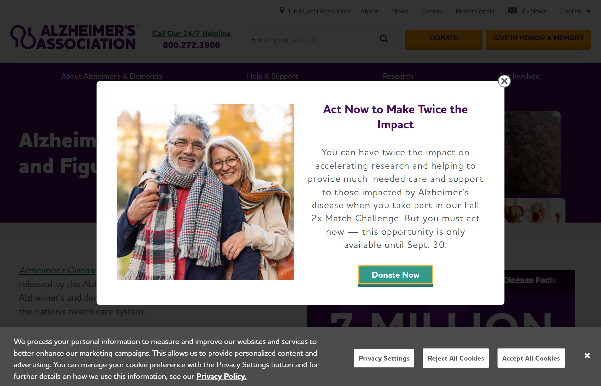
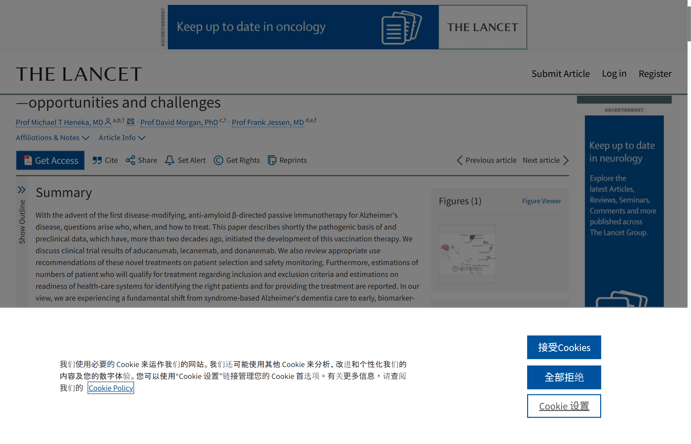
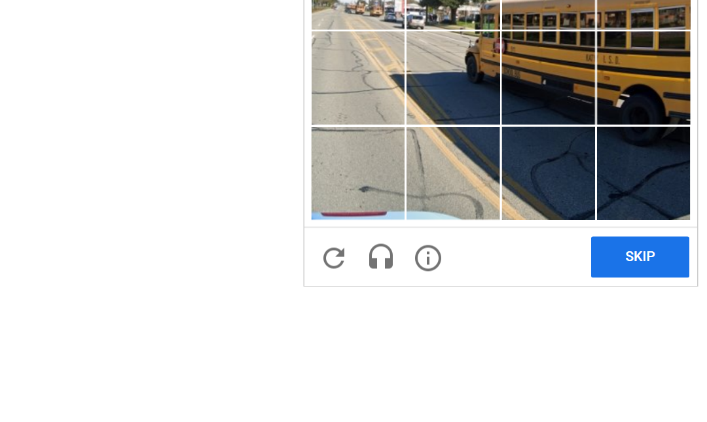
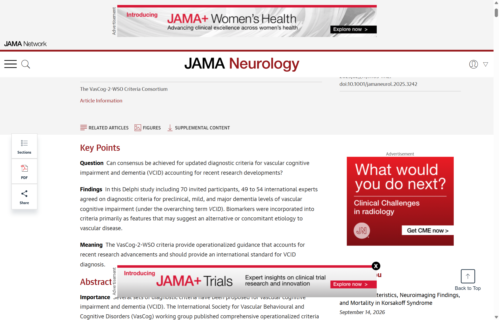
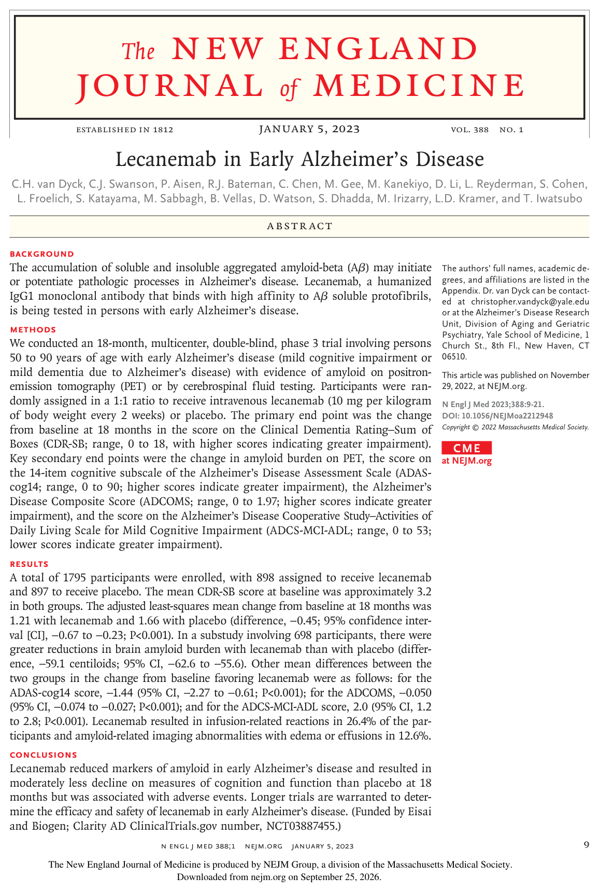
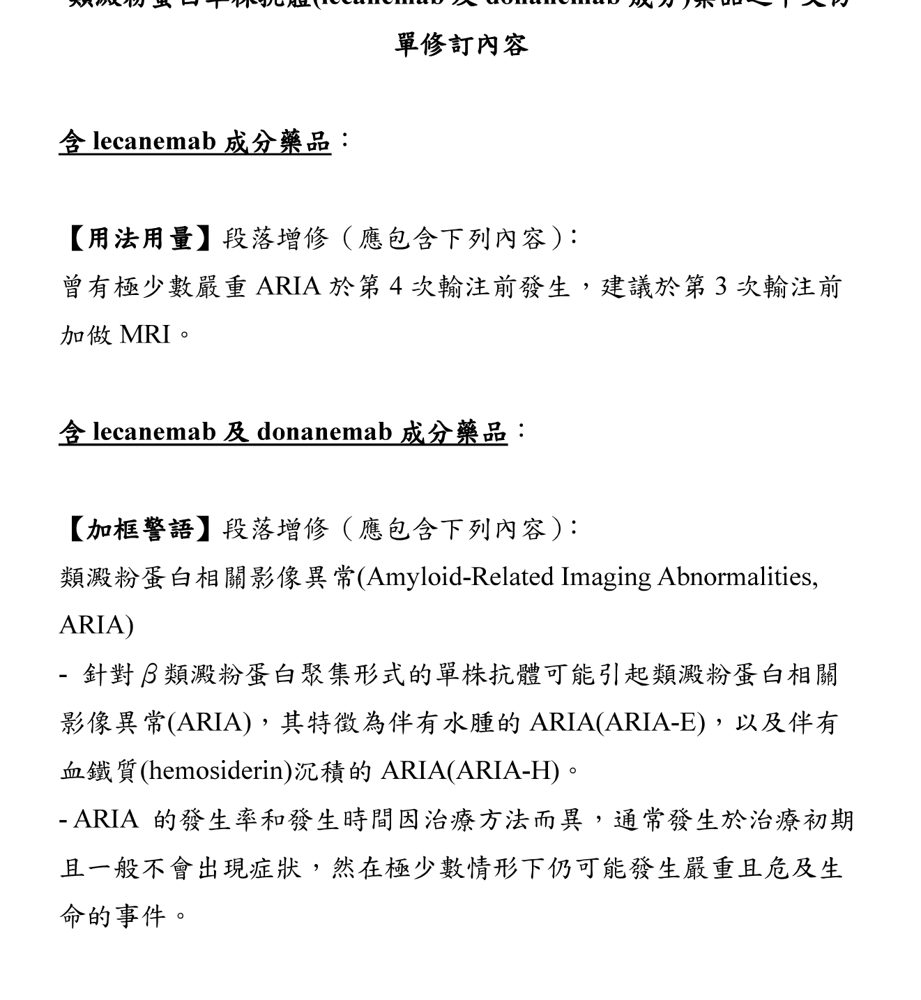
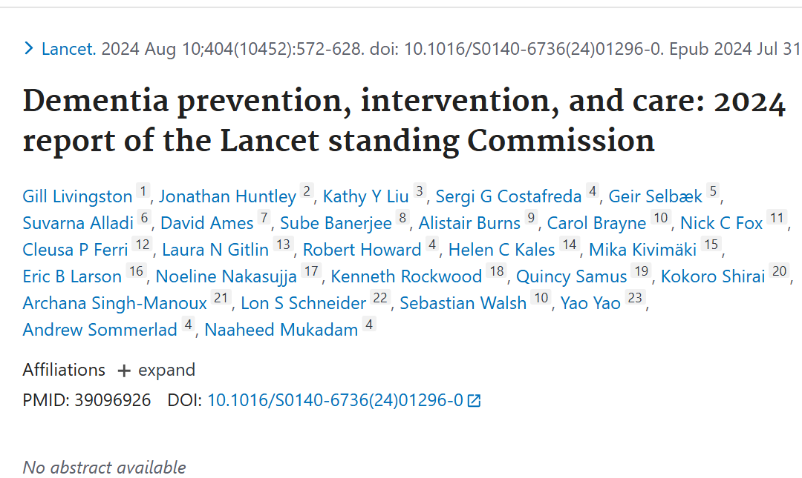

馬偕醫學院醫學系 · 四年級神經學課程
失智症與神經退化疾病
腦血管預防 2026
從臨床症候群、生物標記診斷到新藥與預防：2024–2026 新準則整合版
陳培豪 醫師
馬偕紀念醫院 神經科 · 失智防治中心；馬偕醫學院醫學系
2026 最新整合版｜文獻實證檢索截止 2026-09-26｜學術授課專用
各位同學好，今天的主題是失智症與神經退化疾病，以及腦血管與中樞神經退化的預防。本堂課整合了 2024 到 2026 年最新的國際診斷指引與治療實證。
課程全景地圖：兩大主軸、五大模組與核心能力
從臨床症候群、分子生物標記到新藥與預防，建立醫學生清晰之神經學臨床決策架構
醫學系四年級 6 大關鍵任務
參考指引：馬偕醫學院醫學系四年級神經學核心課程指引；台灣神經學學會 2026 失智症與腦血管疾病臨床教學綱要
各位同學，這張全景地圖展示了今天課程的兩大主軸與五大模組。前九十分鐘聚焦在失智症與神經退化疾病的精準診斷與新藥治療；後九十分鐘探討腦血管與神經退化的共同預防防線。
學習目標：上完這三小時，你應該能做到
失智症與神經退化疾病＋腦血管與神經退化疾病的預防 2026 · 第 3 頁
03 / 150
六個學習目標。前五個屬於第一節：分辨認知障礙的階段、理解阿茲海默症的生物學定義、做鑑別診斷、判讀血液檢測、比較治療。第六個屬於第二節：把最新的預防證據轉成一張可執行的處方。期末考題也會依這六項命題。 【教學提點】請同學在筆記上寫下這六個動詞：區分、說明、鑑別、判讀、比較、應用。課程結束前我們會用陳伯伯的病例逐一檢查。
開場案例：70 歲陳伯伯，這是哪一種失智？
請由病史、局灶神經徵候與精神症狀，思考第一線門診醫師當天首要且最關鍵之處置
70 歲男性｜高血壓不規則服藥 · 疑似 TIA 病史
• 突發局灶病史：數年前曾突發性右側肢體無力與步態不穩，急診觀察數小時後自發緩解。
• 認知退化病程：近 1 年短期記憶明顯衰退、重複問話、出門曾迷路；呈階梯式功能退步。
• 神經與精神症狀：近兩週步態緩慢拖足、頻尿、進食偶有嗆咳；情緒顯著低落，對家屬嘆氣「很想早點死了算了」。
案例出處：改寫自馬偕紀念醫院神經科門診真實臨床案例（去識別化）｜Cheng YC et al., JCMA 2026 [PMID 41527161]
陳伯伯有血管危險因子、疑似過往暫時性腦缺血、階梯式認知退步與步態拖足。面對這樣的長輩，當天首要且最緊急的處置應該是什麼？請同學們先作答。
認知障礙的光譜與評估
01 · 第 5 頁
Cognitive impairment: spectrum and evaluation
第一章建立共同語言：什麼叫失智、怎麼問病史、怎麼篩檢與分期，以及哪些情況不能錯過。
負擔：全球 5,700 萬人，台灣 65 歲以上每 12…
01 認知障礙的光譜與評估 · 第 6 頁
WHO Dementia fact sheet（2026-07-03）｜衛福部臺灣社區失智症流行病學調查（109–112 年）
全球層級，WHO 2026 年 7 月更新的資料：2021 年有 5,700 萬名失智者，每年近 1,000 萬新病例，失智症是第七大死因。台灣：衛福部委託國衛院在 109 到 112 年做的全國社區調查，65 歲以上盛行率 7.99%，女性高於男性；推估 2024 年約 35 萬人，2041 年接近 68 萬人。盛行率沒有上升，人數卻翻倍，驅動力是人口老化。 【教學提點】提醒同學區分盛行率與人
從正常老化到失智症：四個階段的界線在「功能」
客觀測驗是否異常、日常生活是否需要協助，是區分 SCD、MCI 與失智症的兩把關鍵標尺
| 階段 | 主觀感受 | 心理測驗 | 日常功能 | 臨床決策重點 |
|---|---|---|---|---|
| 正常老化 | 偶爾忘記人名、提示可想起 | 測驗完全正常 | 完全獨立自理 | 健康飲食、運動、社交參與 |
| 主觀認知減退 (SCD) | 自覺退步顯著、持續擔憂 | 測驗常模內正常 | 完全獨立自理 | 排查焦慮憂鬱、睡眠呼吸中止、定期追蹤 |
| 輕度認知障礙 (MCI)★ | 本人或同住家屬明確察覺 | 客觀異常 (低於常模 1–1.5 SD) | 基本自理獨立 (IADL 費力) | 血液/PET 生物標記分流；介入血管危險因子 |
| 失智症 (Dementia) | 家屬帶來就醫、病識感差 | ≥ 2 認知範疇顯著減損 | 日常功能喪失 (需他人協助) | 病因鑑別、症狀治療、安全照護與法律規劃 |

權威指引 認知光譜病程演變圖：Alzheimer's Association 2026 Facts & Figures｜Petersen RC et al., Neurology 2018 [PMID 29282327]
資料來源：Petersen RC, et al. Neurology 2018;90:126–135 [PMID 29282327]（AAN MCI 臨床指引）；Alzheimer's Association 2026 Facts & Figures
四個階段的關鍵差別在兩把尺：客觀測驗和日常功能。SCD 是自己覺得變差但測驗正常；MCI 是測驗真的異常，但生活大致獨立；失智症則是日常生活功能已經受損。右側是美國阿茲海默協會的認知演變光譜。
DSM-5-TR 認知架構：六大認知範疇與床邊評估
從單純記憶衰退擴展至全方位神經心理範疇，建立結構化床邊認知測驗與定位思維
| 認知範疇 | 功能損害表徵 | 床邊常用測驗 |
|---|---|---|
| 1. 複合注意力 | 易受環境外在影響、多工處理困難 | 數字倒背 (Digit span backward)、連續減七 |
| 2. 執行功能 | 規劃失序、無法彈性切換思維與糾錯 | 連分測驗 B (TMT-B)、畫鐘測驗、Stroop 色字色詞測驗 |
| 3. 學習與記憶 | 重複發問、記不得短近期事件與約會 | 五項單詞延遲回憶、線索提示、再認對比 |
| 4. 語言功能 | 尋字困難（舌尖現象）、語意理解障礙 | 物體命名、動物類別流暢度（1 分鐘 ≥ 15 個） |
| 5. 知覺動作 | 空間迷航、無法正確操作日常器械（失用） | 仿畫交叉五角形、3D 立方體、手勢指令操作 |
| 6. 社會認知 | 失去同理心、言行去抑制、漠視社交禮節 | 面部情緒識別、失言測驗、家屬行為問卷評估 |
輕度 vs 重度神經認知障礙 (NCD)
• 認知功能顯著低於先前水準（常模 1–2 SD）。
• 工具性日常活動 (IADL) 獨立：仍能自理，但需耗費額外心力、使用代償輔助策略。
• 認知功能顯著衰退（通常低於常模 > 2 SD）。
• 日常功能受損：無法完全獨立自理，基本生活起居或財務管理必須仰賴他人協助。
參考準則：American Psychiatric Association. DSM-5-TR, 2022；Sachdev PS, et al. Am J Geriatr Psychiatry 2014;22:1195–1207 [PMID 25262375]
在 DSM-5-TR 中，認知功能被拆解為六大領域。請同學特別注意：失智症的本質是多範疇衰退，而輕度神經認知障礙與重度失智症的關鍵邊界，就在於日常工具性活動是否仍能保持獨立。
六大認知領域：病史會聽到什麼、床邊怎麼測
01 認知障礙的光譜與評估 · 第 9 頁
American Psychiatric Association. DSM-5-TR. 2022｜Nasreddine ZS, et al. J Am Geriatr Soc 2005;53:695-9. PMID 15817019
六個領域各舉一個家屬會講的例子與床邊測試。問病史時請家屬舉具體例子：例如「同一件事問好幾次」指向情節記憶與海馬迴；「在熟悉的地方迷路」指向視空間；「個性變了、講話不得體」要想到額顳葉失智。MoCA 比 MMSE 多了執行功能與視空間的題目。 【教學提點】請同學兩人一組，用三個詞延遲回憶與畫時鐘互相測試一次，體會床邊測試的操作。時鐘測驗同時測執行功能與視空間。
三大症狀群 ABC：台灣失智者 66% 有至少一項行為精…
01 認知障礙的光譜與評估 · 第 10 頁
衛生福利部：臺灣社區失智症流行病學調查結果（109–112 年）https://www.mohw.gov.tw/cp-16-78102-1.html
失智症的三大症狀群可以用 ABC 記：A 日常功能、B 行為精神症狀、C 認知。臨床上最常讓家屬撐不下去的是 B。衛福部這次社區調查發現 66.01% 的失智者至少有一項行為精神症狀，而且越嚴重越多。這也是為什麼後面治療章節會獨立講 BPSD 的處置。 【教學提點】BPSD 常是家屬求助的真正原因。問診時除了問記憶，也要主動問睡眠、情緒、妄想與攻擊行為。
譫妄、失智、憂鬱：三個最常被混淆的診斷
01 認知障礙的光譜與評估 · 第 11 頁
American Psychiatric Association. DSM-5-TR. 2022｜Hermann P, et al. Nat Rev Neurol 2022;18:363-376. PMID 35508635
三個最常混淆的診斷。譫妄的關鍵是急性起病、一天內起伏、注意力受損；失智症是緩慢漸進、早期注意力大致保留；憂鬱的病人常常自己強調記憶很差，測驗時回答不知道。三者不互斥：失智症病人更容易發生譫妄，而晚發的憂鬱也可能是退化疾病的前驅期。 【教學提點】病房會診時先想譫妄：急性起病、注意力不集中、一天內起伏。找誘因包括感染、藥物、電解質、疼痛、尿滯留與便祕。
病史是最好的診斷工具：五個問題與四個紅旗
01 認知障礙的光譜與評估 · 第 12 頁
Atri A, et al. Alzheimers Dement 2025;21:e14333. PMID 39713942｜Day GS. Continuum 2022;28:901-936. PMID 35678409
病史五個問題：第一個症狀、起病速度、功能變化、伴隨症狀、藥物與共病。右邊四個紅旗代表不典型：年輕發病、快速進展、局部神經學徵象或肌躍症、早期步態與尿失禁。出現紅旗要儘快做 MRI、腦波與腦脊髓液等進一步檢查。 【教學提點】問病史一定要有知情者，而且要分開問：病人常低估症狀，家屬有時也會誇大或淡化。
篩檢與分期工具：各有用途，沒有一個能單獨診斷
01 認知障礙的光譜與評估 · 第 13 頁
Atri 2025 PMID 39713939｜Folstein 1975 PMID 1202204｜Nasreddine 2005 PMID 15817019｜Galvin 2005 PMID 16116116｜Morris 1993 PMID 8232972
四個常用工具。MMSE 最普及，也是健保審查依據，但受教育程度影響大、對 MCI 不敏感；MoCA 加入執行功能與視空間，比較適合找 MCI；AD8 是給知情者的八題問卷，兩題以上改變就算異常；CDR 是半結構式訪談，用來分期。沒有一個工具可以單獨診斷。 【教學提點】篩檢工具的切點會受教育程度與語言影響，台灣長者教育程度差異大，解讀時要考慮文化與教育背景。
CDR 分期：六個領域、五個等級，也是台灣長照與福利的門…
01 認知障礙的光譜與評估 · 第 14 頁
正常
極輕度／可疑
輕度
中度
重度
Morris JC. Neurology 1993;43:2412-4. PMID 8232972
CDR 評估六個領域：記憶、定向力、判斷與解決問題、社區事務、家居與嗜好、個人照料，每個領域分 0、0.5、1、2、3。總分由記憶為主的規則推算。在台灣，CDR 不只用在研究，也是健保用藥、身障鑑定與長照資源申請的重要依據；健保條文細節在治療章節第 85 頁。 【教學提點】CDR 需要受過訓練的評估者；同學在見習時可以觀察個管師或醫師如何整合病人與照顧者的回答。
AA 2025 DETeCD-ADRD：評估分三步，最後…
01 認知障礙的光譜與評估 · 第 15 頁
Atri A, et al. Alzheimers Dement 2025;21:e14333. PMID 39713942（基層）｜Dickerson BC, et al. 2025;21:e14337. PMID 39713957（專科）
AA 2025 的 DETeCD-ADRD 指引，把評估拆成三個問題：病人的功能狀態、屬於哪一種認知行為症候群、最可能的腦部疾病是什麼，最後以病人為中心告知並擬定照護計畫。它分成基層與專科兩份摘要，強調基層也要會做核心評估。 【教學提點】這份指引強調基層也要能完成核心評估，這和台灣推動的失智共同照護網絡方向一致。
可逆性失智病因排查：初診必查之次發性清單
約 5–10% 認知障礙為潛在可逆病因；確診退化性失智前必須完整完成實驗室與影像篩檢
Free T4 / TSH：嚴重甲狀腺低下表現為表情呆滯、動作緩慢、反應遲鈍，補充甲狀腺素後認知可獲顯著逆轉。
B12 / 葉酸：長年全素食或胃切除者易併發亞急性脊髓合併退化症（SCD）；酗酒者易誘發 Thiamine (B1) 缺乏之眼肌麻痺與失憶。
iNPH 典型三聯症：步態磁性拖足、尿失禁、失智；腦室擴大不成比例；引流試驗或腦室腹腔引流手術可治癒！
VDRL / RPR / TPHA：神經梅毒常偽裝為快速進行性失智或精神分裂狂躁症狀；早期青黴素治療可中止不可逆神經損傷。
失智症藥物初次處方前必備套檢
台灣健保規定，開立 AChEI 或 Memantine 前必須檢附一年內排除可逆病因之實驗室數據與腦部影像報告：
參考資料：全民健康保險藥物給付項目及支付標準第 1.3.3 條；台灣神經學學會失智症診療指引 2026
在我們給病人貼上阿茲海默症標籤之前，必須先排查百分之五到十的可逆性病因。這包括甲狀腺低下、維生素十二缺乏、常壓性水腦症以及神經梅毒。這也是台灣健保規定初次開立失智藥物前的法定抽血與影像項目。
台灣社區調查：阿茲海默型 57%、血管型 23%、巴金森…
01 認知障礙的光譜與評估 · 第 17 頁
衛生福利部：臺灣社區失智症流行病學調查結果（109–112 年）https://www.mohw.gov.tw/cp-16-78102-1.html
衛福部社區調查的類型分布：阿茲海默型 56.88%、血管型 22.91%、巴金森病失智 7.12%。剩下約 13% 是其他或未分類，這是我用 100% 扣掉的推算，不是官方數字。要提醒同學：社區調查的分類是臨床診斷，病理研究顯示高齡者多半是混合病理。 【教學提點】社區調查的分類依賴臨床診斷，與病理研究的比例不同；病理研究中混合病理非常常見。
同樣是「失智」，病因完全不同：四位公眾人物
01 認知障礙的光譜與評估 · 第 18 頁
家屬或官方公開聲明與報導；病理診斷以家屬公開資訊為準
四位公眾人物讓同學記得失智不是單一疾病。雷根是阿茲海默症；羅賓·威廉斯生前以巴金森症狀與焦慮就醫，死後病理為瀰漫性路易體病；柴契爾夫人在多次小中風後出現失智；布魯斯·威利以失語症起病，後來家屬公布為額顳葉失智。這些資訊都來自家屬的公開聲明。 【教學提點】用名人案例幫助記憶，但提醒同學尊重病人隱私：臨床上不要在公開場合討論病人的診斷。
快速進展型失智（RPD）：數週到數月惡化，先找可治療的原…
01 認知障礙的光譜與評估 · 第 19 頁
Hermann P, et al. Nat Rev Neurol 2022;18:363-376. PMID 35508635｜Day GS. Continuum 2022;28:901-936. PMID 35678409
快速進展型失智定義上是數週到數月、通常一到兩年內到失智程度。原型是庫賈氏病，MRI 擴散加權的皮質緞帶徵象與腦脊髓液 RT-QuIC 是關鍵。但一定要先找可治療的病因：自體免疫腦炎、感染、代謝中毒與腫瘤。這類病人請住院做完整檢查。 【教學提點】RPD 的第一個問題是：有沒有可以治療的原因？自體免疫腦炎錯過治療時機的代價很高。
第 1 章小結：先定階段、再定症候群、最後找病因
01 認知障礙的光譜與評估 · 第 20 頁
20 / 150
小結。面對每一位病人都走同一個框架：階段、症候群、病因、計畫。接下來第二章進入最常見的病因：阿茲海默症。 【教學提點】第一章的框架請帶到病房：階段、症候群、病因、計畫。下一章我們把焦點放在最常見的病因。
阿茲海默症
02 · 第 21 頁
Alzheimer's disease: pathology, genetics and biological diagnosis
第二章是整堂課的核心：阿茲海默症從臨床診斷走到生物學診斷，血液檢測正在改變基層與專科的分工。
阿茲海默雙重病理：Aβ 沉積與 Braak 分期
細胞外 Aβ 斑塊早於症狀 20 年出現，而細胞內 Tau 纖維糾結之蔓延才是驅動神經元死亡與失智之關鍵
• 位置：神經細胞外沉積。
• 特性：早於發病 15–20 年前即達高原期，與臨床認知退化嚴重度之直接相關性較低。
• 位置：神經細胞內過度磷酸化 Tau 聚集。
• 特性：導致微管崩解與突觸失能；其解剖分佈與認知減退嚴重度高度平行！
Jack 動態生物標記時序模型
阿茲海默症從分子病變到臨床發病需耗時 20–30 年，各生物標記呈現階梯式序貫異常：
參考資料：Braak H, Braak E. Acta Neuropathol 1991;82:239–259 [PMID 1759558]；Jack CR Jr, et al. Lancet Neurol 2013;12:207–216 [PMID 23332364]
阿茲海默症有兩大病理特徵：細胞外的類澱粉斑塊和細胞內的神經原纖維糾結。類澱粉斑塊很早就出現，但真正決定認知退化嚴重程度的是 Tau 蛋白的擴散範圍，這也就是著名的 Braak 分期。
病理：細胞外 Aβ 斑塊、細胞內 tau 纏結，tau …
02 阿茲海默症 Alzheimer's disease · 第 23 頁
（transentorhinal）
Braak H, Braak E. Acta Neuropathol 1991;82:239-59. PMID 1759558｜Jack CR Jr, et al. Alzheimers Dement 2024;20:5143-5169. PMID 38934362
阿茲海默症的兩大病理：細胞外的 Aβ 斑塊與細胞內的 tau 纏結。Braak 分期描述 tau 的擴散順序：一二期在內嗅皮質，多半沒有症狀；三四期到海馬迴與邊緣系統，對應 MCI；五六期到新皮質聯合區，對應失智。臨床考點：斑塊多寡與認知相關性弱，tau 與突觸流失才與症狀同步。 【教學提點】病理與症狀的對應是考試重點：tau 的分布比斑塊負擔更能解釋症狀。
APP 代謝雙路徑：α 保護性 vs β→γ 澱粉生成機制
APP 穿膜蛋白的酵素切割分流：α-分泌酶阻斷 Aβ 生成，BACE1 與 γ-分泌酶則啟動神經毒性級聯反應
由 α-分泌酶 (ADAM10) 於 Aβ 序列內部（Lys16-Leu17）進行首度切割，直接破壞 Aβ 的完整分子結構。
由 β-分泌酶 (BACE1) 於 Asp672 切割，產生 sAPPβ 與膜上 C99 (β-CTF)；再由 γ-分泌酶 切割。

Lancet 2024 類澱粉分子級聯假說機制圖：Heneka MT, et al. Lancet 2024;404:2198–2208 [PMID 39549715]
文獻來源：Jack CR Jr, et al. Alzheimers Dement 2024;20:5143–5169 [PMID 38934362]；Heneka MT, et al. Lancet 2024;404:2198–2208 [PMID 39549715]
APP 是穿膜蛋白。若由 α-分泌酶切割，切在 Aβ 胜肽內部，生成無害的 p3 片段；若由 β-分泌酶與 γ-分泌酶連續切割，就會釋放出高毒性的 Aβ42，進一步聚集成破壞突觸的寡聚體與斑塊。右側是二〇二四年刺胳針發表的分子病理圖。
生物標記時序：症狀出現前 15–20 年，類澱粉已經開始…
02 阿茲海默症 Alzheimer's disease · 第 25 頁
程度
Jack CR Jr, et al. Lancet Neurol 2013;12:207-16. PMID 23332364（假說模型示意，曲線非實測資料）
Jack 2013 的假說模型：Aβ 最早異常，接著 tau，然後是神經退化，最後才是記憶與臨床功能。這張圖是示意，不是實測曲線。它的臨床意義有兩面：一方面給了早期偵測與治療的時間窗，另一方面也提醒我們，許多 Aβ 陽性的高齡者一生都不會發病，這正是 IWG 反對純生物學定義的理由。 【教學提點】這張圖說明了早期介入的邏輯，也說明了生物標記陽性不等於會發病。兩面都要講給病人聽。
遺傳：三個致病基因造成早發型；APOE ε4 是晚發型最…
02 阿茲海默症 Alzheimer's disease · 第 26 頁
Farrer LA, et al. JAMA 1997;278:1349-56. PMID 9343467｜Fortea J, et al. Nat Med 2024;30:1284-1291. PMID 38710950
三個致病基因 APP、PSEN1、PSEN2 造成體染色體顯性的早發型 AD，占不到 1%。晚發型最重要的風險基因是 APOE。Farrer 1997 的統合分析：白人 ε3/ε4 的勝算比 3.2、ε4/ε4 是 14.9；日本族群更強，分別是 5.6 與 33.1。ε2 則具保護效果。對東亞病人，APOE 在抗類澱粉抗體的 ARIA 風險評估上也特別重要。 【教學提點】東亞族群 APOE ε
APOE4 同型合子：幾乎完全外顯，應視為一種遺傳型 A…
02 阿茲海默症 Alzheimer's disease · 第 27 頁
Fortea J, et al. Nat Med 2024;30:1284-1291. PMID 38710950
Fortea 2024 在 Nature Medicine 提出：APOE4 同型合子幾乎全部在 55 歲後出現 AD 生物標記，65 歲時 CSF 類澱粉幾乎都異常、類澱粉 PET 陽性率 75%，症狀發病中位 65.1 歲，時序可預測，類似體染色體顯性 AD 與唐氏症。因此作者主張 APOE4/4 是一種遺傳型 AD，需要個人化的預防、試驗與治療策略。實務上，這群人也是 ARIA 風險最高的族
2024 AA 新準則：阿茲海默症生物學診斷
確立 Core 1 與 Core 2 標記分類；血液 p-tau217 將基層醫師診斷準確率自 61% 大幅推升至 91%
2024 年阿茲海默協會修訂指引：即便病患完全無症狀，只要生物標記陽性即符合 AD 定義；將診斷窗口提前 15–20 年！
• 標的：Amyloid PET、CSF Aβ42/40、血漿 p-tau217★。
• 意義：反映類澱粉與早期 tau 病理，任一陽性即可判定具 AD 生物學特徵。
• 標的：Tau PET（內側顳葉 → 新皮質）。
• 意義：反映實質纖維糾結擴散程度，用於抗體治療前分層（低/中/高 tau 負荷）。

文獻來源：Jack CR Jr, et al. Alzheimers Dement 2024;20:5143–5169 [PMID 38934362]；Palmqvist S, et al. JAMA 2024;332:717–726 [PMID 39068545]
二〇二四年國際阿茲海默協會發佈了革命性的診斷準則，將阿茲海默症正式定義為一種生物學病理過程，不再侷限於臨床失智症狀。刺胳針與 JAMA 的最新研究證實，血液檢驗 p-tau217 能將診斷準確度從百分之六十一推升到百分之九十一。
生物分期 A–D 與臨床分期 0–6：兩條軸並列
02 阿茲海默症 Alzheimer's disease · 第 29 頁
Jack CR Jr, et al. Alzheimers Dement 2024;20:5143-5169. PMID 38934362
AA 2024 把生物分期與臨床分期並列。生物分期 A 到 D 依 tau PET 的擴散：A 是只有類澱粉，B 是內側顳葉 tau，C 與 D 是新皮質 tau 中度與高度。臨床分期 0 到 6：0 是帶致病基因但無症狀，1 是生物標記異常但無症狀，2 是過渡期，3 是 MCI，4 到 6 是輕度到重度失智。目前抗類澱粉抗體的適用族群就是臨床 3 到 4 期且 Core 1 陽性。 【教學提點
IWG 2024 的反對意見：無症狀的類澱粉陽性者不應被…
02 阿茲海默症 Alzheimer's disease · 第 30 頁
Dubois B, et al. JAMA Neurol 2024;81:1304-1311. PMID 39483064｜Jack CR Jr, et al. Alzheimers Dement 2024;20:5143-5169. PMID 38934362
IWG 2024 在 JAMA Neurology 發表不同立場：純生物學定義若用在臨床，會把大量認知正常、類澱粉陽性的人貼上 AD 標籤，而文獻顯示多數人短期內不會發病。IWG 建議稱這群人為 AD 風險者，只有特定生物標記型態、接近發病者才稱症狀前 AD。考試與臨床告知都要注意這兩種說法的差異。 【教學提點】請同學思考：如果一位認知正常的長輩血液檢測陽性，你會怎麼告知？這正是兩派爭論的核心。
生物標記工具箱：侵入性、成本、可近性與回答的問題各不相同
02 阿茲海默症 Alzheimer's disease · 第 31 頁
Jack CR Jr, et al. 2024. PMID 38934362｜Palmqvist S, et al. 2025. PMID 40729527
五類工具各有角色。類澱粉 PET 直接看到斑塊，可以定量，也用來判斷抗體治療後是否清除；tau PET 最能反映分期；CSF 可以一次測類澱粉、tau 與 α-突觸核蛋白種子擴增；血漿檢測便宜可近，但廠牌差異大，慢性腎病會讓 p-tau 偏高；MRI 與 FDG 用於鑑別與 ARIA 基線。 【教學提點】血液檢測的普及會改變轉介流程，但也帶來偽陽性與過度診斷的風險，必須搭配完整的臨床評估。
血液檢測在基層：醫師判斷正確率 61%，加上 p-tau…
02 阿茲海默症 Alzheimer's disease · 第 32 頁
Palmqvist S, et al. JAMA 2024;332:1245-1257. PMID 39068545
Palmqvist 2024 JAMA 的瑞典研究：1,213 位因認知症狀就診的病人。基層醫師靠臨床、認知測驗與 CT 判斷 AD 的正確率只有 61%，專科醫師 73%；改用血液 APS2 或 %p-tau217 都約 90%。前瞻分析中基層的陽性預測值 88%、陰性預測值 90%。要注意受試者有一半是 AD 病理陽性，在前測機率較低的族群，陽性預測值會降低。 【教學提點】這個研究最令人印象
AA 2025 血液生物標記指引：兩個門檻、兩種用途、限…
02 阿茲海默症 Alzheimer's disease · 第 33 頁
MCI 或失智；疑似 AD
%p-tau217、p-tau181、Aβ42/40
敏感度 ≥ 90%、特異度 ≥ 75%
敏感度與特異度皆 ≥ 90%
Palmqvist S, et al. Alzheimers Dement 2025;21:e70535. PMID 40729527
Palmqvist 2025 是 AA 第一份血液生物標記臨床實務指引，用 GRADE 方法。兩個門檻：敏感度 90% 加特異度 75% 可以做分流；兩者都 90% 以上，可以取代類澱粉 PET 或 CSF。適用範圍限於記憶專科、已有客觀認知障礙者，不是無症狀篩檢。指引也提醒很多市售檢測，特別是單一切點，達不到這兩個門檻。 【教學提點】兩個門檻是考題重點：分流 90 與 75、確認 90 與 9
FDA 2025：兩項阿茲海默症血液檢測先後獲准上市
02 阿茲海默症 Alzheimer's disease · 第 34 頁
FDA 新聞稿 2025-05-16（fda.gov）｜Roche 投資人快訊 2025-10-13（roche.com）
2025 年兩項重要核准。5 月 FDA 核准 Fujirebio 的 Lumipulse p-tau217 與 Aβ42 比值，陽性者 91.7% 經 PET 或 CSF 證實有類澱粉，陰性者 97.3% 為陰性。10 月 Roche 的 Elecsys p-tau181 獲准用於基層，定位是排除，陰性預測值 97.9%。兩者都限 55 歲以上、已有認知症狀者。台灣目前多數為自費或研究使用。
判讀血液結果：先想前測機率，再看是否落在灰區
02 阿茲海默症 Alzheimer's disease · 第 35 頁
Palmqvist S, et al. 2025. PMID 40729527｜Palmqvist S, et al. JAMA 2024. PMID 39068545
判讀血液結果先想前測機率。兩切點法把結果分成陰性、灰區與陽性：陰性去找其他病因，灰區要用 PET 或 CSF 確認或追蹤，陽性且檢測達確認門檻才支持 AD。慢性腎病會讓 p-tau 偏高，這是最常見的偽陽性原因之一。無症狀者不應做例行血液檢測。 【教學提點】判讀任何檢查都要先想前測機率，這是實證醫學的基本功，血液標記也不例外。
非典型 AD：不是每個 AD 都從記憶開始
02 阿茲海默症 Alzheimer's disease · 第 36 頁
Graff-Radford J, et al. Lancet Neurol 2021;20:222-234. PMID 33609479
非典型 AD 包括語意缺詞型 PPA、後皮質萎縮、皮質基底症候群與額葉型。65 歲前發病的 AD 大約三分之一是非典型。它們的生物標記都是 AD，但萎縮部位隨症候群而不同。臨床上遇到年輕、以語言、視覺或動作起病的病人，生物標記可以幫助鑑別。 【教學提點】年輕病人以語言、視覺或行為起病時，別忘了非典型 AD；這些病人常被誤診為精神疾病或眼科問題。
影像型態：MRI 看結構與血管，FDG 看代謝，PET …
02 阿茲海默症 Alzheimer's disease · 第 37 頁
Jack CR Jr, et al. Alzheimers Dement 2024;20:5143-5169. PMID 38934362｜Graff-Radford J, et al. 2021. PMID 33609479
影像先排除其他病因，再支持 AD 型態。MRI 看內側顳葉萎縮、血管病變與微出血，後者也是抗體治療前的 ARIA 基線。FDG-PET 典型 AD 為顳頂葉與後扣帶低代謝；DLB 常見枕葉低代謝而後扣帶迴相對保留，稱為後扣帶島徵象。 【教學提點】MRI 是抗類澱粉治療前的必要檢查，用來評估微出血與血管病變，也是 ARIA 監測的基線。
LATE：最常被誤認為 AD 的 TDP-43 病變
02 阿茲海默症 Alzheimer's disease · 第 38 頁
Nelson PT, et al. Brain 2019;142:1503-1527. PMID 31039256｜Wolk DA, et al. Alzheimers Dement 2025;21:e14202. PMID 39807681
LATE 是邊緣系統為主的年齡相關 TDP-43 腦病變。Nelson 2019 的共識報告指出，社區解剖中約四分之一的腦有足以造成認知障礙的 LATE-NC。Wolk 2025 提出第一份臨床準則：進行性記憶喪失加海馬迴明顯萎縮，類澱粉陰性為 probable；類澱粉未知或陽性但萎縮與 AD 程度不成比例為 possible。在抗類澱粉治療時代，辨識 LATE 可避免不必要的治療。 【教學提點
高齡腦很少只有一種病變：混合病理降低發病門檻
02 阿茲海默症 Alzheimer's disease · 第 39 頁
斑塊＋纏結
梗塞、小動脈硬化
2 控制血管危險因子仍然有效
3 生物標記與治療反應可能不一致
Kapasi A, et al. Acta Neuropathol 2017;134:171-186. PMID 28488154｜Nelson PT, et al. 2019. PMID 31039256
Kapasi 2017 的綜述：高齡 AD 病人常合併血管病變、CAA、Lewy 體、TDP-43 與海馬迴硬化，這些共病會降低臨床失智的門檻。所以單一病因標籤常不完整；同時也表示即使是 AD，控制血管危險因子仍有意義。回到陳伯伯，他很可能就是混合型。 【教學提點】混合病理的觀念貫穿全課：它解釋了為什麼血管危險因子的控制對 AD 也有意義。
第 2 章小結：AD 已從「臨床排除診斷」走到「生物標記…
02 阿茲海默症 Alzheimer's disease · 第 40 頁
40 / 150
第二章小結五點。下一章進入另一類蛋白病：α-突觸核蛋白病，包括路易氏體失智、巴金森病失智與多系統萎縮，以及同屬 tau 病變的 PSP 與 CBD。 【教學提點】第二章結束。請同學用一句話說明 AA 2024 與 IWG 2024 的差別，作為自我檢核。
α-突觸核蛋白病與非典型巴金森症候群
03 · 第 41 頁
Synucleinopathies and atypical parkinsonism
第三章處理「認知＋動作」的病人。α-突觸核蛋白病包括巴金森病、DLB 與 MSA；PSP 與 CBD 則是 tau 病變，但臨床上常與它們混淆。
路易體失智症：四大核心特徵、一年法則與用藥警訊
掌握生動視幻覺、認知波動、RBD 與巴金森運動；嚴禁盲目使用第一代抗精神病藥
DLB 2017 第四版共識：四大核心特徵 (4 Core Features)
具備 ≥ 2 項即可能確診DLB vs PDD：關鍵「一年法則」
參考資料：McKeith IG, et al. Neurology 2017;89:88–100 [PMID 28592453]；Siderowf A, et al. Lancet Neurol 2023;22:407–417 [PMID 37059509]
路易體失智症是第二常見的退化性失智。診斷的四大核心是認知波動、生動視幻覺、快速動眼期睡眠行為障礙以及巴金森症狀。特別強調一年法則以區分路易體失智與巴金森失智；對於視幻覺，千萬不能隨意給予抗精神病藥，以免引發致命性的高敏感反應。
DLB 第四版共識準則（2017）：核心特徵＋指示性生物…
03 α-突觸核蛋白病與非典型巴金森症候群 · 第 43 頁
McKeith IG, et al. Neurology 2017;89:88-100. PMID 28592453
2017 年第四版 DLB 共識準則清楚區分臨床特徵與生物標記。四個核心特徵中 RBD 升格為核心；指示性生物標記有三項：DAT 影像、MIBG 心肌閃爍攝影、多導睡眠圖。兩項以上核心特徵，或一項核心加一項指示性標記，就是很可能 DLB。支持性特徵還包括自律神經失調、嗅覺減退、姿勢不穩與反覆跌倒等。 【教學提點】RBD 的診斷最好有多導睡眠圖證實，臨床上也可以問床伴：是否在夢中喊叫、揮拳或踢腳。
前驅期 DLB（2020 研究準則）：三種不同的起點
03 α-突觸核蛋白病與非典型巴金森症候群 · 第 44 頁
McKeith IG, et al. Neurology 2020;94:743-755. PMID 32241955
McKeith 2020 提出前驅期 DLB 的三種表現：MCI、譫妄起病與精神症狀起病。目前只有 MCI-LB 有操作化的研究準則，另外兩型證據不足，但臨床上要提高警覺。例如老年人第一次出現幻視、晚發性精神病，或手術後譫妄遲遲不恢復。 【教學提點】前驅期 DLB 的概念提醒我們：老年人第一次出現的精神症狀，要先排除神經退化疾病。
Lewy 病理的擴散：Braak PD 分期由延腦與嗅球…
03 α-突觸核蛋白病與非典型巴金森症候群 · 第 45 頁
Braak H, et al. Neurobiol Aging 2003;24:197-211. PMID 12498954｜Horsager J, et al. Parkinsonism Relat Disord 2024. PMID 38519273
Braak 2003 描述巴金森病的 Lewy 病理擴散：一二期在延腦迷走神經背核與嗅球，對應便祕與嗅覺減退；三四期到中腦黑質，動作症狀出現；五六期到新皮質，出現認知障礙。這個上行模式不適用於所有病人，後面會講身體先發與大腦先發的兩種亞型。 【教學提點】Braak 模型是教學上的簡化；不是每位病人都遵循這個順序，這也引出身體先發與大腦先發的討論。
α-syn 種子擴增檢測（SAA）：活體偵測 Lewy …
03 α-突觸核蛋白病與非典型巴金森症候群 · 第 46 頁
Siderowf A, et al. Lancet Neurol 2023;22:407-417. PMID 37059509
Siderowf 2023 用 PPMI 世代研究評估腦脊髓液 α-syn SAA。全部巴金森病的敏感度 87.7%，特異度 96.3%；典型嗅覺減退的散發型病人敏感度高達 98.6%。LRRK2 突變的病人只有 67.5% 陽性，提示部分 LRRK2 病人沒有 Lewy 病理。前驅族群 51 人中 44 人陽性，無症狀基因帶因者 310 人中 25 人陽性。圖中健康對照的 3.7% 與前驅 86
2024 生物學定義：神經元 α-突觸核蛋白病（NSD）…
03 α-突觸核蛋白病與非典型巴金森症候群 · 第 47 頁
Simuni T, et al. Lancet Neurol 2024;23:178-190. PMID 38267190
Simuni 2024 提出把巴金森病與 DLB 重新定義為神經元 α-突觸核蛋白病。兩個生物錨點：S 是病理性 α-syn，目前以 SAA 偵測；D 是多巴胺功能障礙，以 DAT 影像評估。0 期是 SNCA 致病變異；1A 只有 S，1B 有 S 與 D；2 期有輕微症狀但無功能損害；3 到 6 期功能損害逐漸加重。作者明白表示目前只供研究使用。 【教學提點】生物學定義的目的是讓試驗能在症狀
SynNeurGe：另一套生物學分類——S、N、G 加上…
03 α-突觸核蛋白病與非典型巴金森症候群 · 第 48 頁
Höglinger GU, et al. Lancet Neurol 2024;23:191-204. PMID 38267191
SynNeurGe 是與 NSD-ISS 同期發表的另一套生物學分類：S 是 α-syn、N 是神經退化、G 是基因，再連結臨床 C。它的特點是可以描述沒有 α-syn 病理的巴金森病，例如部分 LRRK2 或 PRKN 病人。兩套系統的目的相同：讓疾病修飾試驗能在症狀前收案。 【教學提點】比較兩套系統時，請同學注意它們對 LRRK2 等沒有 α-syn 病理病人的處理方式不同。
PDD 還是 DLB？一年法則
03 α-突觸核蛋白病與非典型巴金森症候群 · 第 49 頁
失智先出現，或與巴金森症狀相隔 < 1 年
巴金森病確立 ≥ 1 年後才出現失智
McKeith IG, et al. Neurology 2017;89:88-100. PMID 28592453｜全民健康保險藥品給付規定 1.3.3（114/10/1）
一年法則：失智先出現、或在巴金森動作症狀出現一年內出現，稱 DLB；巴金森病確立一年以上才失智，稱 PDD。共識報告說明這個法則主要用於研究分組，臨床上兩者屬同一病理連續譜。健保 1.3.3 對 PDD 的 rivastigmine 規定限神經科，且失智發生於 PD 診斷一年以後。 【教學提點】一年法則是人為的分界，臨床上更重要的是處置原則相同。
DLB 與 PDD 的治療：膽鹼藥物效果較好，抗精神病藥…
03 α-突觸核蛋白病與非典型巴金森症候群 · 第 50 頁
McKeith IG, et al. Neurology 2017;89:88-100. PMID 28592453｜Cummings J, et al. Lancet 2014;383:533-40. PMID 24183563
DLB 與 PDD 的治療是在多個症狀間取捨。膽鹼缺損比 AD 更嚴重，ChEI 效果常較明顯，也可改善幻覺。精神病症狀先減少抗巴金森藥物，必要時用低劑量 quetiapine 或 clozapine；pimavanserin 在 2014 年的第三期試驗改善巴金森病精神病。絕對避免 haloperidol。levodopa 用最低有效劑量。台灣 pimavanserin 的上市與給付狀態請以食藥
多系統萎縮（MSA）：MDS 2022 準則，自律神經失…
03 α-突觸核蛋白病與非典型巴金森症候群 · 第 51 頁
Wenning GK, et al. Mov Disord 2022;37:1131-1148. PMID 35445419
MSA 的 MDS 2022 準則新增臨床確立與臨床很可能兩個類別。臨床確立需要自律神經失調加上對 levodopa 反應不佳的巴金森症或小腦症候群，並需至少一項 MRI 標記。自律神經的操作定義：殘尿 100 毫升以上的排尿困難、急迫性尿失禁，或 3 分鐘內收縮壓降 20、舒張壓降 10 的神經性姿勢性低血壓。支持特徵的完整清單請見原文。 【教學提點】MSA 病人常先到泌尿科或心臟科，因為排尿
進行性上眼神經核麻痺（PSP）：MDS 2017 準則的…
03 α-突觸核蛋白病與非典型巴金森症候群 · 第 52 頁
Höglinger GU, et al. Mov Disord 2017;32:853-864. PMID 28467028
PSP 的 MDS 2017 準則把臨床特徵分成四個領域：眼動 O、姿勢不穩 P、動作不能 A、認知 C，每個領域各有三級。最典型的是 Richardson 症候群：垂直凝視麻痺或眼跳變慢，加上三年內反覆跌倒。其他變異型包括 PSP 巴金森型、步態凍結型、語言型與 CBS 型。 【教學提點】PSP 床邊檢查一定要看垂直眼跳的速度，而不只是眼球能不能動到位。
病例：63 歲吳先生，說話費力、右手不靈活、刺激誘發肌躍
03 α-突觸核蛋白病與非典型巴金森症候群 · 第 53 頁
Armstrong MJ, et al. Neurology 2013;80:496-503. PMID 23359374
回到舊講義的病例吳先生：非流暢性失語、右手僵硬、失用與刺激誘發肌躍，符合皮質基底症候群。Armstrong 2013 準則把 CBD 的表現型分成 CBS、額葉行為空間症候群、naPPA 與 PSP 症候群。要強調 CBS 是臨床診斷，病理可能是 CBD、PSP，也可能是 AD，所以類澱粉與 tau 生物標記有鑑別價值。 【教學提點】吳先生的病例說明症候群與病理的分別：CBS 是臨床症候群，病理
巴金森症候群鑑別矩陣：先看 levodopa 反應、眼動…
03 α-突觸核蛋白病與非典型巴金森症候群 · 第 54 頁
McKeith 2017 PMID 28592453｜Wenning 2022 PMID 35445419｜Höglinger 2017 PMID 28467028｜Armstrong 2013 PMID 23359374
鑑別矩陣。先看 levodopa 反應：PD 最好，DLB 中等，MSA、PSP、CBS 都差。再看早期失智與幻覺：DLB。早期嚴重自律神經失調：MSA。垂直凝視麻痺與早期跌倒：PSP。明顯不對稱的失用與異手：CBS。這張表是教學用的簡化，個別病人會有例外。 【教學提點】鑑別矩陣可以在見習時當作查核表使用；遇到 levodopa 反應不佳的巴金森症，一定要重新檢視診斷。
身體先發 vs 大腦先發：同一個巴金森病，兩條起點
03 α-突觸核蛋白病與非典型巴金森症候群 · 第 55 頁
Horsager J, et al. Parkinsonism Relat Disord 2024;122:106101. PMID 38519273
Horsager 等人的 α-突觸核蛋白起源與連接體模型：身體先發型從腸道神經系統經迷走神經上行，RBD、便祕與自律神經症狀先出現，較對稱，較多認知障礙；大腦先發型從嗅球或杏仁核開始，動作症狀先出現。2024 年的更新說分子影像研究大多支持，MRI 研究結果不一。第十章講預防時會回到這個模型。 【教學提點】身體先發與大腦先發的模型把前驅症狀與腸腦軸連在一起，第十章談預防時會再用到。
第 3 章小結：認知＋動作的病人，先問 RBD、幻視與 …
03 α-突觸核蛋白病與非典型巴金森症候群 · 第 56 頁
56 / 150
第三章小結。下一章處理另一群以行為與語言起病的退化疾病：額顳葉失智，以及水腦與庫賈氏病等其他原因。 【教學提點】第三章結束。請同學說出 DLB 的四個核心特徵與三個指示性生物標記。
額顳葉失智與其他退化性失智
04 · 第 57 頁
Frontotemporal dementia and other causes
第四章講以行為與語言起病的額顳葉失智，並補上兩個臨床上不能錯過的鑑別：常壓性水腦與庫賈氏病。
額顳葉失智症光譜：行為變異型與三大進行性失語
65 歲以下早發型失智主力；性格劇變、冷漠、強迫儀式與語言崩解，膽鹼系統完好禁用 ChEI
行為變異型額顳葉失智 (bvFTD)：6 大特徵（需 ≥ 3 項）
Rascovsky 2011 準則原發進行性失語 (PPA) 三大變異型
參考資料：Rascovsky K, et al. Brain 2011;134:2456–2477 [PMID 21810890]；Gorno-Tempini ML, et al. Neurology 2011;76:1006–1014 [PMID 21325651]
額顳葉失智症是六十五歲以下早發型失智的主要原因。最常見的行為變異型表現為言行去抑制、冷漠同理心喪失、強迫儀式與嗜甜暴食。特別注意其膽鹼系統功能正常，臨床上嚴禁使用乙醯膽鹼酯酶抑制劑，以免加重焦躁症狀。
bvFTD 國際準則（Rascovsky 2011）：六…
04 額顳葉失智與其他退化性失智 · 第 59 頁
Rascovsky K, et al. Brain 2011;134:2456-77. PMID 21810890
Rascovsky 2011 的國際共識準則：六項特徵中至少三項為可能 bvFTD，分別是早期脫抑制、早期淡漠、早期失去同理心、刻板或強迫行為、口慾增加與飲食改變，以及執行功能障礙但記憶與視空間相對保留的神經心理型態。加上功能退化與額葉或前顳葉影像證據為很可能，有病理或致病突變為確定。 【教學提點】準則中的「早期」通常指症狀出現後三年內；考題常要求列出六項特徵。
原發性漸進性失語（PPA）三變異型：說話、理解、複述各壞…
04 額顳葉失智與其他退化性失智 · 第 60 頁
Gorno-Tempini ML, et al. Neurology 2011;76:1006-14. PMID 21325651
PPA 三變異型。非流暢型：語法錯誤、說話費力，常見 tau 病理；語意型：命名與單詞理解受損，複述保留，多為 TDP-43 type C；缺詞型：找詞困難、句子複述差，背後最常是 AD 病理。所以語言型病人，特別是 lvPPA，值得做類澱粉生物標記。 【教學提點】PPA 的分型可以用三個問題：說話是否費力、單詞是否聽得懂、句子能否複述。
FTLD 病理：三大蛋白家族，臨床表現型與病理並非一對一
04 額顳葉失智與其他退化性失智 · 第 61 頁
Bang J, et al. Lancet 2015;386:1672-82. PMID 26595641
FTLD 依沉積蛋白分三大家族：tau、TDP-43 與 FET。tau 類包括 Pick 病、PSP、CBD 與 MAPT 突變；TDP-43 類與 GRN、C9orf72 突變相關，語意型 PPA 多為 type C；FET 類少見，常是年輕、行為症狀嚴重的 bvFTD。重點是臨床表現型與病理並非一對一。 【教學提點】臨床表現與病理不是一對一，這是 FTLD 最困難的地方，也是生物標記研究的
遺傳型 FTD：三個主要基因，一個家族可同時出現 FTD…
04 額顳葉失智與其他退化性失智 · 第 62 頁
Bang J, et al. Lancet 2015;386:1672-82. PMID 26595641｜Strong MJ, et al. ALS FTD 2017;18:153-174. PMID 28054827
遺傳型 FTD 以三個基因為主：C9orf72、MAPT、GRN，都是體染色體顯性。C9orf72 同時是 FTD 與 ALS 最常見的遺傳原因，常合併精神病症狀；MAPT 對應 tau 病理；GRN 對應 TDP-43 type A，常不對稱。家族裡同時有失智與運動神經元病時，應轉介遺傳諮詢。 【教學提點】家族史詢問要擴大到精神疾病、運動神經元病與不明原因的早逝，C9orf72 家族常有這些表
ALS–FTD 光譜：超過一半的 ALS 病人有認知或行…
04 額顳葉失智與其他退化性失智 · 第 63 頁
Strong MJ, et al. Amyotroph Lateral Scler Frontotemporal Degener 2017;18:153-174. PMID 28054827
Strong 2017 修訂準則指出 ALS 的神經心理障礙影響超過一半的病人，而且與較短存活相關，所以把它視為光譜：從認知行為正常、單純認知或行為障礙、兩者皆有，到符合 FTD 準則。臨床上 ALS 病人要篩檢認知與行為；反過來，FTD 病人也要檢查有沒有下運動神經元徵象。 【教學提點】ALS 病人的認知與行為障礙會影響決策能力與照護規劃，應盡早評估。
FTD 治療：ChEI 與 memantine 無效，行…
04 額顳葉失智與其他退化性失智 · 第 64 頁
NICE NG97（2018）https://www.nice.org.uk/guidance/ng97｜Bang J, et al. Lancet 2015. PMID 26595641
FTD 目前沒有核准的疾病修飾藥物。NICE 2018 明確建議不要用 ChEI 或 memantine 治療 FTD，ChEI 還可能讓行為更糟。行為症狀以非藥物介入為主，SSRI 與 trazodone 有小型試驗支持。早期要討論駕駛、財務與法律安排，並提供遺傳諮詢與照顧者支持。 【教學提點】FTD 的照護壓力很大，病人常無病識感；照顧者支持與安全規劃是治療的核心。
特發性常壓性水腦（iNPH）：步態、認知、尿失禁，可能因…
04 額顳葉失智與其他退化性失智 · 第 65 頁
Nakajima M, et al. Neurol Med Chir (Tokyo) 2021;61:63-97. PMID 33455998
日本 2021 年第三版 iNPH 指引。三主徵中步態障礙最早出現、對分流反應最好。影像上腦室擴大且 Evans index 大於 0.3，並有 DESH 型態。腰椎放液試驗放出約 30 毫升腦脊髓液，觀察步態與認知改善，作為手術選擇參考。要記得 iNPH 常合併 AD 或血管病變。 【教學提點】iNPH 是少數可以透過手術改善的失智原因之一，但要仔細評估共病與手術風險。
散發型庫賈氏病：快速進展、肌躍症、RT-QuIC 讓生前…
04 額顳葉失智與其他退化性失智 · 第 66 頁
Hermann P, et al. Lancet Neurol 2021;20:235-246. PMID 33609480｜Hermann P, et al. Nat Rev Neurol 2022. PMID 35508635
散發型庫賈氏病是錯誤摺疊的普利昂蛋白造成的致死性疾病。典型病人數週到數月內快速失智，合併肌躍症。MRI 擴散加權的皮質緞帶與基底核高訊號很有價值。Hermann 2021 回顧指出 RT-QuIC 是生前確診的重大突破。台灣的庫賈氏病屬法定傳染病，須依規定通報，並依感染管制處理器械。 【教學提點】庫賈氏病的診斷會影響整個團隊的感染管制與器械處理，懷疑時要及早通報與諮詢。
病例思考：58 歲男性，一年來變得衝動、亂買東西、嗜吃甜…
04 額顳葉失智與其他退化性失智 · 第 67 頁
Ducharme S, et al. Brain 2020;143:1632-1650. PMID 32129844
病例思考：中年男性出現衝動、亂買東西、嗜甜。Ducharme 2020 的國際共識建議結構化評估：知情者病史、社交認知與執行功能測驗、MRI 與必要時 FDG-PET，以及 NfL。NfL 在神經退化時升高，在原發性精神疾病通常正常，這是近年很有用的鑑別工具。本病例為教學情境。 【教學提點】這個病例提醒我們：精神科與神經科要合作，NfL 等體液標記正逐漸成為重要的鑑別工具。
第 4 章小結：行為語言起病想 FTD；快速或步態先壞想…
04 額顳葉失智與其他退化性失智 · 第 68 頁
68 / 150
第四章小結。下一章回到開場病例陳伯伯：血管性認知障礙，以及 2025 年新的 VasCog-2-WSO 準則。 【教學提點】第四章結束。請同學說出 PPA 三變異型各自最常見的病理。
血管性認知障礙
05 · 第 69 頁
Vascular cognitive impairment and dementia (VCID)
第五章回到陳伯伯。血管性認知障礙是第二常見的失智原因，也是最有機會預防的一類。2025 年發表了新的 VasCog-2-WSO 準則。
回到陳伯伯：階梯式退化、步態不穩、頻尿，符合哪一種準則？
05 血管性認知障礙 VCID · 第 70 頁
Dichgans M, Leys D. Circ Res 2017. PMID 28154105｜VasCog-2-WSO. JAMA Neurol 2025. PMID 40955506
陳伯伯有血管危險因子與疑似 TIA，認知退化以執行功能與處理速度為主，合併步態與排尿症狀。要提醒同學：2025 年新準則因為特異性不足，不再把步態障礙與頻尿列為支持條件。高齡病人最常見的是血管與 AD 的混合型，所以必要時仍要做 AD 生物標記。 【教學提點】請同學先回答：陳伯伯的步態與頻尿，在新準則中還算支持條件嗎？答案是不算，因為特異性不足。
血管性認知障礙（VCID）四大病理機轉與臨床表現
點選下方分頁檢視不同血管病變對腦部結構與神經迴路之破壞模式及影像特徵
皮質大血管多發性梗塞 (Multi-infarct Dementia)
典型階梯式退化頸動脈重度狹窄或心房顫動栓塞引起反覆大中型中風，累積腦壞死體積常超過 50–100 mL。
皮質下缺血性小血管病 (Subcortical Ischemic SVD)
隱襲漸進惡化高血壓致微小穿通動脈硬化，引發廣泛性腦白質高訊號（WMH）、腔隙梗塞與血管周圍間隙擴大。
戰略部位梗塞 (Strategic Infarct Dementia)
單一關鍵節點梗塞體積雖小（甚至 < 1 mL），但病灶精準破壞大腦神經網絡關鍵中繼站，單一梗塞即可誘發失智。
腦微出血、CAA 與慢性低灌流 (Microbleeds & Hypoperfusion)
微出血與分水嶺缺血高血壓深部微出血、腦澱粉樣血管病變（CAA 葉性微出血/含鐵血黃素）及嚴重低血壓所致分水嶺梗塞。

JAMA Neurol 2025 VCID 國際診斷與影像生物標記新共識：VasCog-2-WSO Consensus, JAMA Neurol 2025 [PMID 40955506]
參考資料：Dichgans M, Leys D. Circ Res 2017;120:573–591 [PMID 28154105]；VasCog-2-WSO Consensus, JAMA Neurol 2025 [PMID 40955506]
血管性認知障礙主要涵蓋四大病理機轉：大血管多發性梗塞、皮質下缺血性小血管病、戰略部位梗塞，以及腦微出血與慢性低灌流。右側是二〇二五年國際神經學界發表的最新共識準則。
第一分頁是大血管多發性梗塞，多次中風呈典型階梯式退化。
第二分頁是皮質下缺血性小血管病，以額葉皮質下迴路中斷為特徵，資訊處理速度明顯減慢。
第三分頁是戰略部位梗塞，單一關鍵節點病灶即可引發失智。
第四分頁是微出血與慢性低灌流，與 CAA 及腦出血風險密切相關。
STRIVE-2：小血管病的 MRI 標記，要用同一套語…
05 血管性認知障礙 VCID · 第 72 頁
Duering M, et al. Lancet Neurol 2023;22:602-618. PMID 37236211
STRIVE 是小血管病影像的共同語言。主要標記：近期小皮質下梗塞、血管源性腔隙、白質高訊號、血管周圍間隙擴大、微出血與皮質表面含鐵血黃素沉積。STRIVE-2 在 2023 年更新，加入定量影像與病灶—症狀型態。微出血的分布很重要：深部多為高血壓性，嚴格腦葉提示 CAA。 【教學提點】判讀 MRI 時請用 STRIVE 的術語，避免使用含糊的「腦部退化」或「小中風」等描述。
VasCog-2-WSO（2025）：VCID 分三個層…
05 血管性認知障礙 VCID · 第 73 頁
VasCog-2-WSO Criteria Consortium. JAMA Neurol 2025;82:1103-1112. PMID 40955506
2025 年的 VasCog-2-WSO 準則把 VCID 分成三個層級：前臨床或高風險、血管性 MCI、血管性失智。vaMCI 是一個以上領域輕度缺損，約 1 到 2 個標準差，日常功能獨立但較費力；VaD 是明顯缺損、需要協助。很可能 VCID 需要臨床加影像或單基因小血管病證據；只有臨床符合為可能。 【教學提點】前臨床 VCID 的概念把預防提前到影像發現的階段，這與台灣健檢普遍做腦部影像
血管病因的兩條臨床路徑與影像門檻
05 血管性認知障礙 VCID · 第 74 頁
VasCog-2-WSO Criteria Consortium. JAMA Neurol 2025;82:1103-1112. PMID 40955506｜Duering M, et al. 2023. PMID 37236211
VasCog-2-WSO 的血管病因需要臨床與影像雙重證據。臨床有兩條路：中風後三個月以上仍持續，或沒有中風史但以注意、速度、執行功能為主的漸進退化。影像門檻擇一：多發或關鍵部位梗塞、腦幹外兩個以上腔隙、廣泛融合的白質高訊號，或大型、腦葉或兩個以上的出血。這些操作化的數字是本次改版的重點。 【教學提點】準則的影像門檻是本次改版最實用的部分，見習時可以拿病人的 MRI 報告練習對照。
準則演進：從 2011 到 2025，影像門檻愈來愈明確
05 血管性認知障礙 VCID · 第 75 頁
VasCog-2-WSO Criteria Consortium. JAMA Neurol 2025;82:1103-1112. PMID 40955506｜Dichgans M, Leys D. 2017. PMID 28154105
這張表整理 VCI 準則的演進：從 2011 年 AHA/ASA 的框架性定義、2013 年 DSM-5、2014 年 VasCog-1、2018 年 VICCCS-2，到 2025 年 VasCog-2-WSO。主要趨勢是影像門檻愈來愈明確，並新增前臨床層級。新版也不建議把新興影像、體液或視網膜標記用於臨床診斷。 【教學提點】準則演進的趨勢是操作化與可重複性，這也是所有診斷準則共同的發展方向。
腦類澱粉血管病變（CAA）：Boston 2.0 準則加…
05 血管性認知障礙 VCID · 第 76 頁
Charidimou A, et al. Lancet Neurol 2022;21:714-725. PMID 35841910
Boston 2.0 準則：50 歲以上、以腦出血、認知障礙或短暫局部神經發作表現者，兩個以上嚴格腦葉出血性病灶，或一個腦葉病灶加一個白質特徵，且沒有深部出血，為很可能 CAA。在以解剖為金標準的病人中，敏感度從舊版的 64.5% 提升到 74.5%，特異度維持 95%。CAA 也是抗類澱粉抗體治療前必須評估的背景。 【教學提點】CAA 病人使用抗凝血劑或抗類澱粉抗體時出血風險較高，治療前一定要
台灣宜蘭社區驗證：前臨床 VCID 已經與死亡風險相關
05 血管性認知障礙 VCID · 第 77 頁
Lin YR, et al. Neurology 2026;107:e218311. PMID 42531538
2026 年 Neurology 的台灣宜蘭研究，第一個在社區驗證 VasCog-2-WSO 準則的研究之一。1,236 位無中風、無失智的居民，19.6% 影像有腦血管病變，19.2% 符合前臨床 VCID，0.4% 為 vaMCI。死亡率隨層級上升，vaMCI 的校正風險比 7.2。前臨床 VCID 的死亡風險也高 1.5 到 1.7 倍。這支持在無症狀階段就積極控制血管危險因子。 【教學提
第 5 章小結：VCID 是最能預防的失智
05 血管性認知障礙 VCID · 第 78 頁
78 / 150
第五章小結。VCID 的治療以二級預防為核心；Cochrane 2019 的 memantine 回顧顯示在輕中度血管性失智只有小幅認知改善。預防的細節留到第二節第八章。下一章進入治療。 【教學提點】第五章結束，第一節進入治療章節前，請同學先回想陳伯伯可能需要的處置。
失智症的治療
06 · 第 79 頁
Treatment: symptomatic drugs, anti-amyloid antibodies and BPSD
第六章講治療。先談症狀藥物，再談疾病修飾的抗類澱粉抗體，最後談行為精神症狀。
失智症對症治療：AChEI 與美金剛藥理
膽鹼能增強與 NMDA 興奮毒性阻斷之雙重機轉；結合台灣健保 1.3.3 嚴格分期給付條款
代表藥物：Donepezil（愛憶欣，首選）、Rivastigmine（憶思諾，兼具經皮貼片降低腸胃副作用）、Galantamine。
• 副作用注意：心跳過緩 (Bradycardia)、暈厥、噁心腹瀉、失眠多夢；SSS 或房室傳導阻滯者慎用！
代表藥物：Memantine（美金剛，Ebixa，10–20 mg/day）。
• 臨床定位：可單用或與 Donepezil 併用產生協同作用；耐受性佳。
台灣健保門檻與持續用藥標準
MMSE 10–26 分 或 CDR 1–2 級，需檢附排除可逆病因檢驗報告。
MMSE 10–14 分 或 CDR 2 級；符合條件時健保允許 AChEI + Memantine 雙藥併用。
僅給付 Memantine；每年必須重測 MMSE/CDR 申請事前審查續用。
參考資料：全民健康保險藥品給付規定 1.3.3 節；Birks JS, et al. Cochrane Database Syst Rev 2018；McShane R, et al. Cochrane 2019
失智症傳統對症治療包含兩大支柱：乙醯膽鹼酯酶抑制劑與美金剛。前者增加突觸乙醯膽鹼，後者阻斷興奮毒性。處方時請注意健保一·三·三條的 MMSE 分數與心電圖心律排查規範。
膽鹼與麩胺酸突觸：兩類症狀藥物的作用點
06 失智症的治療 · 第 81 頁
rivastigmine：AChE＋BuChE
Birks JS, Harvey RJ. Cochrane 2018. PMID 29923184｜McShane R, et al. Cochrane 2019. PMID 30891742
兩類症狀藥物的作用點。ChEI 抑制突觸間隙中乙醯膽鹼的分解；rivastigmine 同時抑制 AChE 與 BuChE。memantine 是中等親和力、非競爭性的 NMDA 拮抗劑，阻斷病理性的持續活化，但在正常的突觸傳導時會快速解離。兩者都是症狀治療，不改變病理。 【教學提點】藥理機轉是理解副作用的基礎：膽鹼作用增加帶來心搏過緩與腸胃症狀。
四個症狀藥物的藥理比較：代謝途徑決定交互作用與腎肝調整
06 失智症的治療 · 第 82 頁
Birks JS, et al. Cochrane 2018. PMID 29923184｜McShane R, et al. Cochrane 2019. PMID 30891742｜健保 1.3.3
四個藥的藥理比較。donepezil 與 galantamine 經 CYP2D6 與 3A4 代謝，要注意交互作用；rivastigmine 不經肝臟，有貼片劑型，腸胃副作用較少；memantine 經腎排除，腎功能差要減量。ChEI 共同的重要風險是心搏過緩、暈厥與跌倒，病竇症候群或高度房室傳導阻斷者要避免，這也是健保規定提醒嚴重傳導阻斷不建議使用的原因。 【教學提點】開始 ChEI 前要問
Donepezil 效果量：26 週 MMSE 約 +1…
06 失智症的治療 · 第 83 頁
Birks JS, Harvey RJ. Cochrane Database Syst Rev 2018;6:CD001190. PMID 29923184
Cochrane 2018 的 donepezil 回顧：26 週時 ADAS-Cog 平均少 2.67 分、MMSE 多 1.05 分、重度病人的 SIB 多 5.92 分，功能也有小幅改善，但行為症狀沒有顯著差異。代價是提早退出 24% 對 20%、不良事件 72% 對 65%。23 毫克沒有比 10 毫克更好。這是理解後面抗類澱粉抗體效果量的基準。 【教學提點】請同學記住這些效果量的大小，
Memantine：中重度 AD 有小幅效益，輕度 AD…
06 失智症的治療 · 第 84 頁
McShane R, et al. Cochrane Database Syst Rev 2019;3:CD003154. PMID 30891742
Cochrane 2019 的 memantine 回顧。中重度 AD 有小幅但一致的效益：整體臨床 0.21 分、SIB 3.11 分、ADL 1.09 分、NPI 1.84 分。輕度 AD 沒有效益，而且因不良事件停藥增加。作為激躁的治療也無效。所以健保只給付中重度以上是有實證基礎的。 【教學提點】memantine 在輕度 AD 沒有效益，這是實證與常見臨床習慣不一致的例子。
台灣健保 1.3.3：依嚴重度給付，每年重新評估
06 失智症的治療 · 第 85 頁
全民健康保險藥品給付規定 1.3.3 失智症治療藥品（114/10/1 修訂）；健保署 https://www.nhi.gov.tw
健保 1.3.3 的重點。輕中度 AD 可用三個 ChEI，MMSE 10 到 26 或 CDR 1 到 2；中重度用 memantine，10 到 14 分或 CDR 2，114 年 10 月起可由 ChEI 換用或併用；重度 5 到 9 分且 CDR 3 可用 donepezil、memantine 或併用。PDD 限神經科處方 rivastigmine。每年重新評估，退步超過標準要停藥。抗類
依失智類型選藥：NICE 2018 的建議
06 失智症的治療 · 第 86 頁
NICE guideline NG97（2018）https://www.nice.org.uk/guidance/ng97
NICE 2018 依失智類型的用藥建議。輕度 AD 用 ChEI，中度可加 memantine，重度用 memantine，且不要只因病情變重就停 ChEI。DLB 用 donepezil 或 rivastigmine；VaD 只有在合併 AD、PDD 或 DLB 時才考慮；FTD 不要使用。 【教學提點】FTD 用 ChEI 不但無效還可能變差，這是常見的考題與臨床陷阱。
什麼時候停藥？停 ChEI 一年後，MMSE 多退步約 …
06 失智症的治療 · 第 87 頁
Parsons C, et al. Cochrane Database Syst Rev 2021;2:CD009081. PMID 35608903
Parsons 2021 的 Cochrane 回顧：停用 ChEI 短期認知變差，12 個月時 SMMSE 多退步約 2 分、功能也較差，行為症狀在短中期可能惡化。證據多為低確定性，而且沒有 memantine 停藥的資料。實務上，生命末期或已無有意義互動時，與家屬討論後逐步停藥。 【教學提點】停藥決策要與家屬共同討論，並記錄理由與後續觀察計畫。
AD 藥物的 30 年：從膽鹼補強到清除類澱粉
06 失智症的治療 · 第 88 頁
（已下市）
美國完全核准
美國核准
兩種抗體
（美國）
（美國）
Cummings JL, et al. Alzheimers Dement (N Y) 2025. PMID 40463637｜FDA／TFDA 公告；Eisai 新聞稿（2025-08、2026-07）
AD 藥物三十年的時間軸。1993 年 tacrine，之後三個 ChEI 與 memantine。2023 年 lecanemab 在美國完全核准，2024 年 donanemab 核准。台灣食藥署在 2025 年 3 月與 4 月分別核准 Leqembi 與 Kisunla。Leqembi 皮下劑型在 2025 年 8 月核准維持劑量、2026 年 7 月核准起始劑量。aducanumab 爭
抗體結合的標的不同：原纖維 vs 焦麩胺酸化斑塊
06 失智症的治療 · 第 89 頁
Heneka MT, et al. Lancet 2024;404:2198-2208. PMID 39549715｜Rabinovici GD, et al. J Prev Alzheimers Dis 2025. PMID 40155270
兩個抗體結合的標的不同。lecanemab 結合可溶性原纖維，donanemab 結合斑塊上 N 端焦麩胺酸化的 Aβ。這導致給藥策略不同：lecanemab 是持續治療，18 個月後可改每 4 週靜脈或每週皮下維持；donanemab 採劑量滴定，類澱粉清除到很低水準後可以考慮停藥。劑量依美國仿單。 【教學提點】不同的結合標的解釋了不同的給藥策略與 ARIA 發生率，這是藥理學連結臨床的好例子
Clarity AD：Lecanemab 減緩 CDR-…
06 失智症的治療 · 第 90 頁
van Dyck CH, et al. N Engl J Med 2023;388:9-21. PMID 36449413
Clarity AD：1,795 位早期 AD。18 個月 CDR-SB 惡化 1.21 對 1.66 分，差 0.45 分，約相對減緩 27%。類澱粉減少 59 個 Centiloid。次要結果 ADAS-Cog14 與 ADL 也一致。安全性：ARIA-E 12.6%，輸注反應 26.4%。這是全文首頁，NEJM 2023。 【教學提點】請同學注意主要終點是 CDR-SB，範圍 0 到 18
TRAILBLAZER-ALZ 2：donanemab …
06 失智症的治療 · 第 91 頁
Sims JR, et al. JAMA 2023;330:512-527. PMID 37459141
TRAILBLAZER-ALZ 2：1,736 人，依 tau PET 分成低中 tau 與高 tau。76 週 iADRS 在低中 tau 族群差 3.25 分，約減緩 35%；CDR-SB 差 0.67 分。安全性：ARIA-E 24.0%，其中 52 位有症狀，約 6.1%；輸注反應 8.7%；治療組有 3 例與治療相關的死亡。 【教學提點】TRAILBLAZER-ALZ 2 依 tau
抗類澱粉抗體：Lecanemab 與 Donanemab 比較
從分子作用靶點、臨床減緩幅度、類澱粉清除率、ARIA 風險到 2026 台灣食藥署安全監測鐵律
| 臨床比較維度 | Lecanemab（Leqembi）｜Clarity AD | Donanemab（Kisunla）｜TRAILBLAZER-2 |
|---|---|---|
| 結合靶點 | 專一結合可溶性 Aβ 原纖維 (Protofibrils) | 專一結合斑塊上焦麩胺酸 N3pG-Aβ (AβpE3) |
| 收案族群 | 早期 AD（MCI 及輕度失智）；MMSE 22–30；Aβ 陽性 | 早期 AD；MMSE 20–28；Aβ 陽性＋tau PET 分層 |
| 臨床退化減緩 | CDR-SB 減緩 27%（差異 −0.45 分，p < 0.001） | iADRS 減緩 35%（中度 tau 族群）；CDR-SB 減緩 29% |
| 斑塊清除率 | 18 個月 Centiloid 下降 −59 分（多數轉陰性） | 76 週高達 76% 達到類澱粉陰性 |
| ARIA-E（水腫） | 12.6%（有症狀者 2.8%）；ApoE4/4 為 32.6% | 24.0%（有症狀者 6.1%）；ApoE4/4 為 40.6% |
| 給藥與停藥策略 | 每兩週靜脈輸注；FDA 2026 皮下維持劑型（持續給藥） | 每四週靜脈輸注；達到斑塊清除後可停藥 (Finite dosing) |


NEJM & TFDA 原著試驗實證與台灣食藥署安全監測規範：van Dyck 2023 [PMID 36449413]；TFDA 2026 仿單修訂公告
文獻來源：van Dyck CH, et al. NEJM 2023;388:9–21 [PMID 36449413]；Sims JR, et al. JAMA 2023;330:512–527 [PMID 37459141]；TFDA 2026 仿單修訂公告
這張投影片並排對比兩大抗類澱粉抗體。Lecanemab 與 Donanemab 都能顯著清除斑塊並減緩惡化斜率；Donanemab 清除斑塊後可停藥，但水腫比例較高。治療前務必確認基因型並定期追蹤 MRI。
長期資料：3 年後差距持續擴大，早開始比晚開始好
06 失智症的治療 · 第 93 頁
van Dyck CH, et al. Alzheimers Dement 2025. PMID 41355080｜Zimmer JA, et al. JPAD 2026. PMID 41330788
長期資料。lecanemab 的開放延伸 36 個月：早開始與延遲開始的差距持續，低病理負擔者穩定甚至改善，6 個月後 ARIA 發生率低。donanemab 長期延伸 3 年：早開始者對比 ADNI 外部對照 CDR-SB 少惡化 1.2 分；早開始相對延遲開始的 CDR 惡化風險比 0.73；停藥後類澱粉每年約再累積 2.4 Centiloid。要提醒這些都不是隨機比較。 【教學提點】長期延
類澱粉相關影像異常（ARIA）：病理機轉與安全防線
從血腦屏障破裂機轉、ApoE ε4 基因劑量風險，到 2026 台灣食藥署排程 MRI 處置決策樹
• 機轉：抗體清除血管壁類澱粉引發局部發炎，血腦屏障漏損致血管性水腫。
• 影像：MRI FLAIR 呈大片高訊號；約 70–80% 為無症狀，4–12 週自發吸收。
• 機轉：血管壁微結構脆弱破裂，紅血球外滲。
• 影像：MRI SWI 可見點狀微出血或腦溝表面含鐵血黃素（cSS）；不可逆。
ApoE ε4 基因劑量階梯：ARIA 風險飆升
治療前必驗前 6 個月常規 MRI 監測與停藥處置
參考資料：Withington CG, et al. JAMA Neurol 2023;80:1115–1123 [PMID 37478886]；TFDA 2026 抗類澱粉單株抗體安全監測公告
使用新型單株抗體時，最大的安全考量就是 ARIA。水腫多發生在給藥前三個月，且在 ApoE 四雙套基因型患者中高達百分之三十到四十。台灣食藥署規範治療前半年必須密集追蹤磁振造影，出現神經症狀必須立即停藥。
ARIA 與 APOE 劑量效應：同型合子約一半會發生（…
06 失智症的治療 · 第 95 頁
LEQEMBI 美國仿單（2026-07 修訂）；KISUNLA 美國仿單（2025-07 修訂）DailyMed
這張圖的數字直接來自美國仿單。lecanemab 任何 ARIA：非帶因 13%、異型合子 19%、同型合子 45%；donanemab 分別是 25%、36%、55%。有症狀的 ARIA-E，同型合子約 8 到 9%。東亞族群 ε4 的疾病風險更強，治療前一定要做 APOE 檢測並告知。 【教學提點】APOE ε4 同型合子的 ARIA 風險最高，治療決策要特別謹慎並充分告知。
改良劑量滴定：donanemab 的 ARIA-E 從 …
06 失智症的治療 · 第 96 頁
Wang H, et al. Alzheimers Dement 2025;21:e70062. PMID 40172303｜KISUNLA 美國仿單（2025-07）
TRAILBLAZER-ALZ 6 比較四種 donanemab 給藥方式。24 週 ARIA-E：標準給藥 23.7%，改良滴定 13.7%，達到預設的相對風險降低目標；類澱粉清除與藥物暴露量相當。美國仿單在 2025 年 7 月改成 350、700、1,050，之後 1,400 毫克的滴定。 【教學提點】劑量滴定是藥理學上降低副作用的常用策略，這裡用實際試驗資料說明其效果。
誰適合抗類澱粉抗體？適用對象建議（AUR）的篩選流程
06 失智症的治療 · 第 97 頁
Cummings J, et al. JPAD 2023. PMID 37357276｜Rabinovici GD, et al. JPAD 2025. PMID 40155270
兩份適用對象建議的篩選流程。臨床分期要是 MCI 或輕度失智；類澱粉要以 PET 或 CSF 確認；MRI 在一年內且微出血不超過 4 個、沒有皮質表面含鐵血黃素或明顯血管病變；做 APOE 檢測；最後共享決策。lecanemab AUR 建議需要抗凝血劑者不要使用。 【教學提點】符合條件的病人比例其實不高，篩選流程本身就是醫療資源的挑戰。
MRI 監測時程：2026 年美國與台灣仿單都把監測提前
06 失智症的治療 · 第 98 頁
LEQEMBI 美國仿單 2026-07；KISUNLA 美國仿單 2025-07；食藥署 2026-06-22 中文仿單修訂公告
MRI 監測時程在 2025 到 2026 年變得更密集。美國 lecanemab 仿單 2026 年 7 月版：治療後第 1、2、3、6 個月做 MRI；donanemab 是第 2、3、4、7 次輸注前。台灣食藥署在 2026 年 6 月 22 日公告仿單修訂：因為極少數嚴重 ARIA 發生在第 4 次輸注前，建議 lecanemab 在第 3 次輸注前加做 MRI，並加入 ARIA 加框警語
皮下注射時代：Leqembi Iqlik 從維持到起始都…
06 失智症的治療 · 第 99 頁
Eisai 新聞稿 2026-07-13（media-us.eisai.com）｜LEQEMBI 美國仿單 2026-07｜台灣衛福部核准資訊（2025）
皮下注射。美國 FDA 在 2025 年 8 月核准 Leqembi Iqlik 每週 360 毫克皮下維持劑量，2026 年 7 月 13 日再核准每週 500 毫克的起始劑量，可在家以自動注射器施打。台灣在 2025 年 3 月與 4 月核准 Leqembi 與 Kisunla，自費使用，6 月開始首批施打。皮下劑型在台灣的核准狀態我沒有查到，標為尚待確認。 【教學提點】居家皮下注射可以減少
爭議：效果量是否有臨床意義？誰負擔監測與費用？
06 失智症的治療 · 第 100 頁
2 3 年延伸資料差距擴大
3 越早治療、病理負擔越低，效益越好
2 ARIA 風險、MRI 監測與輸注負擔
3 治療組腦容積下降較多，意義未明
Heneka MT, et al. Lancet 2024;404:2198-2208. PMID 39549715｜van Dyck CH, et al. N Engl J Med 2023;388:9-21. PMID 36449413
這是目前最有爭議的議題。支持者認為這是第一個在第三期試驗減緩臨床退化的疾病修飾治療，長期資料顯示差距擴大。批評者質疑 CDR-SB 差 0.45 到 0.7 分是否有臨床意義、ARIA 的風險與監測負擔，以及治療組腦容積下降較多。Heneka 2024 的 Lancet 綜述也強調醫療體系需要大幅調整。和病人溝通時用絕對數字，說延緩，不說治癒。 【教學提點】請同學分組討論：如果是你的家人，你會選
2025 管線：138 個藥、182 個試驗；semag…
06 失智症的治療 · 第 101 頁
Cummings JL, et al. Alzheimers Dement (N Y) 2025;11:e70098. PMID 40463637｜Cummings JL, et al. JPAD 2026;13:100677. PMID 42785112
Cummings 2025 的管線報告：138 個藥、182 個試驗，小分子疾病標靶 43%、生物製劑 30%、認知增強 14%、神經精神症狀 11%，三分之一是藥物再利用。EVOKE 與 EVOKE+ 用口服 semaglutide 治療早期 AD 兩年，沒有臨床效益，只降低周邊發炎指標。這提醒我們觀察性研究的保護關聯不能直接推論到治療。 【教學提點】藥物再利用是新藥管線的重要來源，但觀察性研
BPSD 的處置：先找原因，再用非藥物，最後才考慮藥物
06 失智症的治療 · 第 102 頁
Watt JA, et al. BMJ 2022;376:e069187. PMID 35078774
Watt 2022 BMJ 的 BPSD 處置架構：先排除譫妄，再用保護、易感、誘發、持續四類因子描述症狀。非藥物介入是第一線；只有在症狀讓病人或照顧者非常痛苦、或有危險時才考慮藥物；最後要定期檢討，無效或害處大於好處時停藥。目標要個人化且可衡量，例如目標達成量表。 【教學提點】非藥物介入需要照顧者參與；醫師的角色是協助找出原因並設定可衡量的目標。
抗精神病藥：死亡風險警語；brexpiprazole 首…
06 失智症的治療 · 第 103 頁
Nakamura Y, et al. Alzheimers Dement 2024;20:8002-8011. PMID 39369280｜FDA 核准 brexpiprazole 用於 AD 激躁（2023-05）
抗精神病藥用於失智相關精神病都有死亡風險增加的加框警語。美國 FDA 在 2023 年 5 月核准 brexpiprazole 用於 AD 激躁，是第一個。日本的第二三期試驗：10 週後 2 毫克組 CMAI 比安慰劑少 7.2 分，1 毫克組少 3.7 分；不良事件發生率三組相近。但所有藥物之前，都要先處理疼痛、感染、便祕、睡眠與藥物等可逆誘因。 【教學提點】任何抗精神病藥都要設定停藥檢討時間
第一節總結：從「哪一種失智」到「怎麼治療」
失智症與神經退化疾病＋腦血管與神經退化疾病的預防 2026 · 第 104 頁
104 / 150
第一節總結六點。休息十分鐘後，第二節進入預防：同樣的血管與生活型態因子，如何同時降低中風、失智與巴金森病的風險。 【教學提點】第一節結束，休息十分鐘。請同學休息時想一想：你自己的血壓、睡眠與運動是否達標？
血管健康即大腦健康：神經血管單元與共同病理網絡
大腦僅佔體重 2% 卻消耗 20% 氧與葡萄糖；血腦屏障受損、微血管缺血與神經退化高度交織
大腦沒有能量儲備，完全仰賴密集且健康的腦微血管網絡即時灌流；凡是損害全身動脈血管的危險因子，皆直接重創大腦認知網絡！
Life's Essential 8 (LE8) 大腦健康指引
參考資料：Zlokovic BV. Nature 2011;474:178–187 [PMID 21654798]；Lloyd-Jones DM, et al. Circulation 2022；Thomas A, et al. JAMA Neurol 2023
第二節的起點是這項重要觀念：血管健康就是大腦健康。大腦微血管構成的神經血管單元，是維持血腦屏障與代謝廢物清除的基石。美國心臟協會提出的生活八要項，能同時降低六成中風與四成五失智風險。
腦中風：全球第三大死因、第四大失能原因，每年 1,190…
07 疾病負擔與共同框架 · 第 106 頁
分型
GBD 2021 Stroke Risk Factor Collaborators. Lancet Neurol 2024;23:973-1003. PMID 39304265
GBD 2021 中風報告：2021 年 730 萬人死於中風，是第三大死因；1.6 億失能調整生命年，第四大原因；每年 1,190 萬新病例、9,380 萬存活者。新發中風中缺血性 65.3%、腦內出血 28.8%、蜘蛛網膜下出血 5.8%。值得注意的是 2015 年以後發生率下降停滯，東南亞、東亞與 70 歲以下族群甚至上升。 【教學提點】中風負擔在年輕族群上升，與肥胖、糖尿病與高血壓年輕化
腦內出血：只占中風 29%，卻占中風死亡 46%、失能負…
07 疾病負擔與共同框架 · 第 107 頁
Parry-Jones AR, et al. Int J Stroke 2025;20:145-150. PMID 39629687｜衛福部 113 年死因統計
WSO 2025 的腦出血事實表：腦出血占新發中風 28.8%，卻占中風死亡的 45.6%、失能負擔的 49.5%，高於缺血性的 43.8%。亞洲是重災區，東南亞、東亞與大洋洲占全球腦出血失能負擔的 53.3%，而高收縮壓至少貢獻一半。台灣 113 年死因統計，腦血管疾病仍是第四位，高血壓性疾病第六位。 【教學提點】腦出血在亞洲比例較高，高血壓控制是最有效的預防手段。
巴金森病：2050 年全球 2,520 萬人，比 202…
07 疾病負擔與共同框架 · 第 108 頁
Su D, et al. BMJ 2025;388:e080952. PMID 40044233
Su 2025 BMJ 以 GBD 2021 推估：2050 年全球 2,520 萬名巴金森病人，比 2021 年增加 112%。人口老化貢獻 89%、人口成長 20%、盛行率改變只有 3%。東亞將有 1,090 萬人，男性比例也上升。巴金森病是成長最快的神經系統疾病之一。 【教學提點】巴金森病人數增加主要來自老化，這代表照護需求會持續上升。
同一個大腦、同一組危險因子：預防的共同路徑
07 疾病負擔與共同框架 · 第 109 頁
高血壓、LDL、糖尿病
運動、飲食、吸菸、飲酒、睡眠
聽力、視力、孤立、憂鬱
空污、農藥、溶劑、鉛
小血管病
氧化壓力
（Aβ、tau、α-syn）
韌性下降
GBD 2021 Nervous System Disorders Collaborators. Lancet Neurol 2024;23:344-381. PMID 38493795｜Livingston G, et al. 2024. PMID 39096926
GBD 2021 指出神經系統疾病合計是全球失能負擔的第一名，前十名裡有中風與阿茲海默症。這些疾病共享一組可改變的危險因子：血管、生活型態、感官與社會、環境。機轉上它們透過血管損傷、發炎、蛋白聚集與腦儲備下降，最後分流成不同的疾病。這張圖是教學示意，箭頭不代表每一條都有因果證據。 【教學提點】這張圖是第二節的地圖：同一組危險因子，透過不同機轉，導致不同的疾病。
Life's Essential 8：八項指標，分數越高…
07 疾病負擔與共同框架 · 第 110 頁
Lloyd-Jones 2022 PMID 35766027｜Wu 2023 PMID 37466001｜Zhou 2023 PMID 37369360｜Georgescu 2025 PMID 40235832
LE8 是 AHA 2022 提出的心血管健康指標：飲食、身體活動、尼古丁、睡眠四項行為，加上 BMI、血脂、血糖、血壓四項因素。開灤世代理想對比差的心血管健康，中風風險比 0.33；UK Biobank 最佳對比差，全因失智少 44%、血管性失智少 71%。但另一個 UK Biobank 分析發現心血管健康與巴金森病的發生沒有顯著關聯，只與 PD 後的死亡有關。舊版講義寫 PD 降 22%，我查
腦中風的預防
08 · 第 111 頁
Primary and secondary prevention of stroke
第八章中風預防。重點是一連串 2024 到 2026 年的新試驗與新指引。
INTERSTROKE：十個可改變的危險因子，合計解釋 …
08 腦中風的預防 · 第 112 頁
O'Donnell MJ, et al. Lancet 2016;388:761-75. PMID 27431356
INTERSTROKE 在 32 國收了 13,447 位急性中風與 13,472 位對照。十個可改變因子的人口可歸因風險合計 90.7%。高血壓一項占 47.9%，其次是缺乏規律運動、ApoB/ApoA1 比值、飲食與腰臀比。注意個別 PAR 因為重疊，加起來會超過 100%。高血壓對腦出血的關聯比缺血性更強。 【教學提點】INTERSTROKE 告訴我們：中風大多可以預防，而高血壓是第一優先
GBD 2021：代謝風險占中風負擔 69%，環境 37…
08 腦中風的預防 · 第 113 頁
Feigin VL, et al. Int J Stroke 2025. PMID 39635884｜GBD 2021 Stroke. Lancet Neurol 2024. PMID 39304265
WSO 2025 事實表：中風歸因於代謝風險 69%、環境 37%、行為 35%，全球成本超過 8,900 億美元。GBD 2021 發現 1990 到 2021 年增加最多的是高 BMI、高溫與高空腹血糖。代謝疾病與氣候變遷正在推高中風負擔。 【教學提點】氣候變遷與高溫也成為中風的危險因子，這是近年新的公共衛生議題。
2024 AHA/ASA 中風初級預防指引：時隔十年的七…
08 腦中風的預防 · 第 114 頁
Bushnell C, et al. Stroke 2024;55:e344-e424. PMID 39429201｜Razavi AC, et al. JACC Adv 2025;4:101724. PMID 40338758
2024 AHA/ASA 中風初級預防指引取代 2014 年版。Razavi 2025 整理七個更新：地中海型飲食、第 2 型糖尿病高風險者使用 GLP-1 促效劑、更積極的血壓目標、降血脂藥物、阿斯匹靈不作例行初級預防、動脈粥狀硬化的 colchicine，以及首度加入的性別特異建議，例如妊娠高血壓與早發停經。建議等級細節請見原文。 【教學提點】指引的性別特異建議提醒我們詢問女性病人的妊娠併發
腦中風一二級預防：收縮壓嚴格控制與精準抗栓決策
ESPRIT 與 SPRINT 實證確立 SBP < 120 mmHg 效益；心房顫動以 DOAC 為核心，動脈硬化採短期雙抗
嚴格降壓新標準：SBP < 120 mmHg 跨國實證
Lancet 2024強化降壓至 SBP < 120 mmHg，主要中風與心血管事件顯著降低 12%（HR 0.88，p = 0.006），且不增加嚴重暈厥或摔倒風險！
SBP < 120 mmHg 相較於 140 mmHg，心血管死亡降低 27%，輕度認知障礙 (MCI) 發生率降低 19%！
腦中風二級預防抗栓雙分流
CHA2DS2-VASc 男 ≥ 1、女 ≥ 2 分者，唯一首選 DOAC（Apixaban, Rivaroxaban, Edoxaban）；抗血小板藥無法有效預防心因性栓塞！
高危 TIA（ABCD2 ≥ 4）或輕微缺血性中風，急性發作 24 小時內啟動 DAPT 治療 21 天（Aspirin + Clopidogrel），隨後轉單抗長期維持。
參考資料：ESPRIT Collaborative Group. Lancet 2024;404:245–255 [PMID 38945140]；AHA/ASA 2024 Guidelines for the Primary and Secondary Prevention of Stroke
腦中風預防有兩大關鍵突破：第一是血壓目標。二〇二四年刺胳針發表的 ESPRIT 試驗證實，收縮壓控制在一百二十毫米汞柱以下，能進一步降低重大心血管事件與認知衰退。第二是抗栓治療：心房顫動必須使用新型口服抗凝劑，而動脈硬化小中風則採用二十一天短期雙抗策略。
代鹽（75% 氯化鈉＋25% 氯化鉀）：中風少 14%、…
08 腦中風的預防 · 第 116 頁
Neal B, et al. N Engl J Med 2021;385:1067-1077. PMID 34459569
SSaSS 是群集隨機試驗：600 個中國村莊，20,995 位有中風史或 60 歲以上高血壓者。代鹽組中風率比 0.86、主要心血管事件 0.87、死亡 0.88，嚴重高血鉀沒有增加。這是少數以硬終點證實有效的飲食介入。但腎功能不全或用保鉀藥物的病人要先評估。 【教學提點】代鹽是便宜、可大規模推廣的介入，但腎功能不佳與服用保鉀藥物者要小心。
血脂、血糖、抗血小板：初級預防的三個常見問題
08 腦中風的預防 · 第 117 頁
Bushnell C, et al. Stroke 2024;55:e344-e424. PMID 39429201｜Razavi AC, et al. 2025. PMID 40338758
三個常見問題。血脂：依整體動脈粥狀硬化風險使用 statin。糖尿病：高心血管風險的第 2 型糖尿病優先考慮 GLP-1 促效劑。阿斯匹靈：沒有臨床心血管疾病的人不作例行初級預防，因為出血風險可能抵消效益。colchicine 是這次新增的項目。具體建議等級與 LDL 目標請以指引原文為準。 【教學提點】阿斯匹靈用於初級預防的觀念改變很大，請同學不要再把它當成保健品。
心房顫動：CHA₂DS₂-VASc 評中風、HAS-BL…
08 腦中風的預防 · 第 118 頁
2 NOAC 療效與安全性不劣於甚至優於 warfarin，顱內出血較少
3 機械瓣膜置換後使用 warfarin
4 高齡者 apixaban、edoxaban 出血安全性較佳；依腎功能調整劑量
台灣腦中風學會 2024 口服抗凝血劑用於心房纖維顫動病人腦中風預防指引。台灣中風醫誌 2024;6(1):1-65
心房顫動。CHA₂DS₂-VASc 每項分數如表；台灣腦中風學會 2024 指引建議以它評估中風風險，以 HAS-BLED 評估出血。NOAC 與 warfarin 相比療效相近或更好，顱內出血較少；機械瓣膜例外。高齡者 apixaban 與 edoxaban 的出血安全性較佳。HAS-BLED 高分的意義是去矯正可逆的出血因子。 【教學提點】抗凝治療的最大障礙常是醫師與病人對出血的恐懼，要用數
亞臨床 AF（ARTESIA）：apixaban 減少中…
08 腦中風的預防 · 第 119 頁
Healey JS, et al. N Engl J Med 2024;390:107-117. PMID 37952132
ARTESIA：4,012 位裝置偵測的亞臨床 AF。apixaban 使中風或全身性栓塞從每年 1.24% 降到 0.78%，風險比 0.63；大出血從 0.94% 升到 1.71%，風險比 1.80。換算成每年每千人約少 5 次中風、多 8 次大出血，這是我依原文年發生率相減的推算。臨床上要依中風風險與出血風險個人化決定。 【教學提點】亞臨床 AF 的處置仍需個人化，這是共享決策的典型情境。
無症狀頸動脈狹窄 ≥ 70%（CREST-2）：支架加內…
08 腦中風的預防 · 第 120 頁
Brott TG, et al. N Engl J Med 2026;394:219-231. PMID 41269206
CREST-2 在 2026 年 1 月發表：高度（70% 以上）無症狀頸動脈狹窄，比較積極內科治療單獨或加上血管重建。支架試驗 4 年主要結果 2.8% 對 6.0%，有顯著差異；內膜切除試驗 3.7% 對 5.3%，不顯著。圍術期支架組有 7 次中風與 1 例死亡，所以仍需評估個別病人的手術風險與預期壽命。 【教學提點】CREST-2 改變了無症狀頸動脈狹窄的討論，但手術團隊的經驗與病人預期
電子菸不是戒菸捷徑：與傳統菸併用者中風勝算最高
08 腦中風的預防 · 第 121 頁
Zhao K, et al. Tob Induc Dis 2022;20:101. PMID 36447455
電子菸統合分析：所有電子菸使用者中風勝算比 1.25；只用電子菸與都不用者相比 1.13，不顯著；與傳統菸併用 1.39；以前抽傳統菸、現在只用電子菸 1.59。這是橫斷研究，不能證明因果，但訊息很清楚：電子菸不是安全的戒菸替代，LE8 的尼古丁指標要求完全不使用。 【教學提點】青少年電子菸使用是公共衛生議題，醫師應主動詢問並提供戒菸資源。
口腔衛生：每天刷牙三次以上，中風風險低 22%
08 腦中風的預防 · 第 122 頁
Chang Y, et al. J Periodontol 2021;92:87-94. PMID 32432793｜Nadim R, et al. Eur J Epidemiol 2020;35:821-833. PMID 32533373
韓國健保研究：每天刷牙三次以上，中風風險比 0.78；齲齒四顆以上 1.28。Nadim 2020 統合分析：牙周病與失智的相對風險，高品質研究 1.38，世代研究 1.18。這些都是觀察性關聯，刷牙習慣同時反映整體健康行為，因果推論要保守。 【教學提點】口腔衛生是容易被忽略的面向，可以和牙科合作推廣。
次級預防：中風或 TIA 後，每一項危險因子都要「達標」
08 腦中風的預防 · 第 123 頁
Kleindorfer DO, et al. Stroke 2021;52:e364-e467. PMID 34024117
AHA/ASA 2021 次級預防指引的核心目標：多數病人血壓低於 130/80；動脈粥狀硬化病因者 LDL 低於 70；糖尿病個人化控制並優先使用具心血管效益的藥物；非心因性中風用抗血小板，輕中風或高風險 TIA 短期雙重抗血小板；心房顫動用口服抗凝劑；加上生活型態與睡眠呼吸中止篩檢。 【教學提點】次級預防的關鍵是持續與達標，追蹤病人的服藥順從性與危險因子控制。
其他可改變因子：心理壓力、飲酒與腹部肥胖
08 腦中風的預防 · 第 124 頁
O'Donnell MJ, et al. Lancet 2016;388:761-75. PMID 27431356
INTERSTROKE 其他因子的勝算比：心理社會壓力 2.20、高量或狂飲 2.09、目前吸菸 1.67、腰臀比最高三分位 1.44；規律運動是保護因子 0.60。注意這裡是 99% 信賴區間。中風預防要把心理壓力、飲酒與腹部肥胖一起處理。 【教學提點】心理壓力與憂鬱也是中風危險因子，身心整合照護很重要。
回到陳伯伯：一張中風與失智的預防處方
08 腦中風的預防 · 第 125 頁
Kleindorfer 2021 PMID 34024117｜Liu J 2024 PMID 38945140｜Neal B 2021 PMID 34459569｜He J 2025 PMID 40258956
回到陳伯伯。處方包括：簡化降壓藥並積極達標、TIA 的血管評估與抗血小板、找 AF、statin、代鹽與地中海型飲食、當天處理自殺意念與憂鬱、認知與聽力評估。下一章會看到，積極降壓在 2025 年的中國群集試驗中也降低了失智。 【教學提點】請同學嘗試為陳伯伯寫出完整的出院衛教單，涵蓋藥物、生活型態與回診計畫。
第 8 章小結：中風的 90% 可歸因於可改變因子
08 腦中風的預防 · 第 126 頁
126 / 150
第八章小結。接下來第九章，同樣的危險因子，如何降低失智？ 【教學提點】第八章結束。記住：中風預防的核心是血壓。
失智症的預防
09 · 第 127 頁
Dementia risk reduction
第九章失智預防。先看觀察性研究推估的上限，再看隨機試驗與自然實驗真正證明了什麼。
Lancet 2024：14 項危險因子可防 45% 失智
橫跨早年、中年至晚年之全生命歷程預防矩陣；2024 新增高膽固醇與未矯正視力受損
全生命週期 14 項危險因子（全球人口歸因分數 PAR 45%）
Lancet 2024
參考文獻：Livingston G, et al. Lancet 2024;404:572–628 [PMID 39096926]；Lin FR, et al. Lancet 2023 [PMID 37466280]；Taquet M, et al. Nature Med 2024
二〇二四年刺胳針委員會公佈了最新報告：全球高達百分之四十五的失智症是可以被預防或延緩的。在中年期，聽力受損與新增的高膽固醇各佔百分之七，是影響最大的危險因子。此外，配戴助聽器與接種帶狀皰疹疫苗，都展現出強大的實證保護力。
生命歷程觀點：預防要從小學教室一路做到老人中心
09 失智症的預防 · 第 129 頁
Livingston G, et al. Lancet 2024;404:572-628. PMID 39096926｜Snowdon DA, et al. JAMA 1996;275:528-32. PMID 8606473
生命歷程觀點。早年靠教育與語言建立認知儲備；中年是血管與感官危險因子的關鍵期；晚年則維持社交、視力與環境品質。修女研究：修女們 22 歲時寫的自傳，概念密度低者晚年認知較差；後來死亡並解剖的 14 位中，低密度者全部有 AD 病理，高密度者都沒有。樣本很小，是經典但需保守解讀的研究。 【教學提點】生命歷程觀點說明預防不是老年醫學專屬，而是跨越一生的公共衛生課題。
降壓預防失智：2025 年第一個以失智為主要終點的陽性試…
09 失智症的預防 · 第 130 頁
He J, et al. Nat Med 2025;31:2054-2061. PMID 40258956｜SPRINT MIND. JAMA 2019;321:553-561. PMID 30688979
CRHCP 是群集隨機試驗：326 個中國農村、33,995 位未控制的高血壓者，由非醫師的村醫依流程調藥，48 個月收縮壓淨降 22 mmHg，全因失智相對風險 0.85。SPRINT MIND 在 2019 年，很可能失智的風險比 0.83 未達顯著，可能因提早終止而檢定力不足，但 MCI 顯著減少。兩者合起來支持積極降壓對大腦也有益。 【教學提點】降壓預防失智是目前證據最強的介入之一，也是
聽力介入（ACHIEVE）：整體無差異，但高風險族群可能…
09 失智症的預防 · 第 131 頁
Lin FR, et al. Lancet 2023;402:786-797. PMID 37478886
ACHIEVE 試驗：977 位 70 到 84 歲、聽力損失但未治療者，助聽器與聽力諮詢對照健康衛教。主要分析 3 年認知變化沒有差異。但預設的敏感度分析顯示來自 ARIC 世代、認知退化風險較高的族群效果不同，交互作用 P 等於 0.010。WHO 2026 年的更新指引把助聽器納入降低失智風險的策略。 【教學提點】聽力與失智的關係是近年研究熱點，至少要做到篩檢與轉介。
多領域生活型態介入：FINGER 與 US POINTE…
09 失智症的預防 · 第 132 頁
Ngandu T, et al. Lancet 2015;385:2255-63. PMID 25771249｜Baker LD, et al. JAMA 2025;334:681-691. PMID 40720610
兩個多領域介入試驗。FINGER：1,260 位高風險芬蘭長者，兩年介入，神經心理測驗總分每年差 0.022 個標準差。US POINTER：2,111 位美國長者，比較結構化與自主式介入，結構化組每年多 0.029 個標準差，APOE ε4 帶因者也受益。效果不大但一致，台灣的在地化方案可以參考。 【教學提點】多領域介入的效果不大但穩定，重點是持續與可近性。
飲食：MIND 飲食試驗是陰性結果
09 失智症的預防 · 第 133 頁
Barnes LL, et al. N Engl J Med 2023;389:602-611. PMID 37466280｜Morris MC, et al. Alzheimers Dement 2015. PMID 26086182
MIND 飲食試驗：604 位長者、3 年，兩組都有輕度熱量限制。全面認知兩組都進步，差異 0.035 不顯著，MRI 也沒有差異。這個陰性結果不代表飲食不重要：對照組也接受營養諮詢與減重，試驗期間可能太短。WHO 2026 仍建議健康飲食。 【教學提點】陰性試驗同樣重要，它提醒我們觀察性研究與試驗結果的差距。
身體活動：每天約 9,800 步、步伐每分鐘 112 步…
09 失智症的預防 · 第 134 頁
Del Pozo Cruz B, et al. JAMA Neurol 2022;79:1059-1063. PMID 36066874
UK Biobank 的加速度計研究：每天 9,826 步時失智風險最低，風險比 0.49；每天只要 3,826 步也有 0.75。步伐每分鐘 112 步的 30 分鐘最高步頻，風險比 0.38。圖中以一減風險比呈現下降幅度。要注意反向因果：前驅期的人本來就活動較少。 【教學提點】運動是同時對中風、失智與巴金森病都有好處的介入，請同學先從自己做起。
睡眠、糖尿病與低血糖：中年短睡與反覆低血糖都與失智相關
09 失智症的預防 · 第 135 頁
Sabia S, et al. Nat Commun 2021;12:2289. PMID 33879784｜Kim YG, et al. Diabetes Metab J 2020;44:125-133. PMID 31701690
Whitehall II：50 歲與 60 歲時每晚睡 6 小時以下，失智風險比 1.22 與 1.37；三個時間點都短睡，風險增加約 30%。糖尿病則是雙向關係：高血糖與波動增加風險，反覆低血糖也增加失智，而失智又讓低血糖更常發生。高齡者的血糖目標要避免低血糖。 【教學提點】睡眠不足與睡眠呼吸中止都應積極處理，高齡糖尿病患者要避免低血糖。
帶狀疱疹疫苗：兩個國家的自然實驗，都指向失智減少
09 失智症的預防 · 第 136 頁
Eyting M, et al. Nature 2025;641:438-446. PMID 40175543｜Pomirchy M, et al. Lancet Neurol 2026;25:170-180. PMID 41579903
兩個自然實驗。威爾斯規定 1933 年 9 月 2 日以後出生者才有疫苗資格，差一週出生的人接種率從 0.01% 跳到 47.2%，其他特徵相同。結果接種疫苗使 7 年內新診斷失智絕對減少 3.5 個百分點，相對 20%。加拿大安大略的研究也發現 5.5 年減少 2.0 個百分點。這是目前最接近因果的失智預防證據之一。目前臨床使用的重組疫苗是否有相同效果，仍需更多研究。 【教學提點】自然實驗是流
環境危險因子：空污、噪音、輪班與綠地
09 失智症的預防 · 第 137 頁
Jones A, et al. Environ Res 2025;270:121007. PMID 39889875｜WHO 2026-07-15 新聞稿
Jones 2025 的傘狀統合分析：與全因失智相關的環境因子包括細懸浮微粒、懸浮微粒、二氧化氮、氮氧化物、一氧化碳、輪班、夜班、慢性噪音與極低頻磁場，社區綠地則有保護作用。WHO 2026 年的新指引首度把減少空污暴露納入建議。各因子的相對風險數字請見原文。 【教學提點】環境因子需要政策介入，個人層面可以減少暴露，但根本改善仍靠公共政策。
藥物能預防失智嗎？觀察性研究樂觀，隨機試驗保守
09 失智症的預防 · 第 138 頁
Westphal Filho 2025 PMID 39822593｜Inoue 2025 PMID 40690769｜Cummings 2026 PMID 42785112｜Ho 2021 PMID 34148364
藥物預防。statin 在 55 個觀察性研究中與失智風險下降 14% 相關；GLP-1 促效劑在嚴謹的目標試驗模擬中整體不顯著，semaglutide 的 EVOKE 試驗也失敗；穿透血腦障壁的 RAS 藥物與較好的記憶表現相關。原則是依原本的適應症用藥，不要為了預防失智而開藥。 【教學提點】藥物預防的證據仍不足，請同學不要為了預防失智而開藥。
認知訓練：ACTIVE 20 年追蹤，速度訓練＋加強課程…
09 失智症的預防 · 第 139 頁
Coe NB, et al. Alzheimers Dement (N Y) 2026;12:e70197. PMID 41669119
ACTIVE 是 1990 年代末的四臂隨機試驗。2026 年連結 Medicare 資料 20 年追蹤：速度訓練且完成加強課程者，失智診斷風險比 0.75；沒有加強課程者沒有效果；記憶與推理訓練無效。這是次級分析，也有學者重新分析後提出不同看法，所以解讀要保守。WHO 2026 建議認知訓練與認知刺激。 【教學提點】認知訓練的長期效果仍有爭議，但保持大腦活躍對生活品質本身就有益。
WHO 2026 更新指引：建議做什麼、不建議吃什麼
09 失智症的預防 · 第 140 頁
WHO. Risk reduction of cognitive decline and dementia: WHO guidelines, 2nd ed. 2026-07-15（who.int）
WHO 在 2026 年 7 月 15 日發布第二版失智風險降低指引，取代 2019 年版。建議包括身體活動、戒菸、減少飲酒、健康飲食、認知訓練與刺激、社交參與，以及高血壓、糖尿病與高膽固醇的管理。新增兩項：減少空氣汙染暴露與助聽器。不建議在沒有缺乏時補充維生素 B、E、omega-3 或綜合維生素。各項建議的強度等級請見指引全文。 【教學提點】WHO 指引是公共衛生層級的建議，可以作為門診衛教
巴金森病的預防
10 · 第 141 頁
Parkinson's disease: risk, protection and prodrome
第十章巴金森病的預防。這個領域最大的陷阱是反向因果：前驅期症狀會改變行為。
巴金森病防線：前驅期識別、環境毒素防範與運動保護
RBD、便秘與嗅覺喪失早於發病 15 年；避開百草枯與有機溶劑，高強度運動刺激 BDNF 延緩退化
MDS 前驅期警訊（早於肢體顫抖 10–20 年）
前驅診斷門檻延緩巴金森退化之生活處方
每週 ≥ 150 分鐘中高強度有氧（快走、太極拳、飛輪單車），刺激大腦釋放神經營養因子 (BDNF)，維持突觸可塑性。
富含多酚與未精緻膳食纖維，維持腸道黏膜完整性，減少腸道發炎向中樞蔓延。
適量飲用黑咖啡或綠茶（腺苷 A2A 拮抗），流行病學一致顯示可降低 PD 發病率 25–30%。
參考資料：Postuma RB, et al. Mov Disord 2019;34:1445–1457 [PMID 31412427]；Dorsey ER, et al. J Parkinsons Dis 2020；Lancet Neurol 2024
巴金森病的預防防線建立在超早期前驅期的識別。當長輩出現夢境搬演、便秘與嗅覺喪失時，黑質多巴胺細胞可能已開始退化。避開農藥與有機溶劑、保持高強度有氧運動刺激腦神經滋養因子，是目前最具實證的神經保護處方。
農藥：巴拉刈、魚藤酮 OR 2.5；住高爾夫球場 1 英…
10 巴金森病的預防 · 第 143 頁
Tanner CM, et al. EHP 2011. PMID 21269927｜Krzyzanowski B, et al. JAMA Netw Open 2025. PMID 40338549｜農業部公告
Tanner 2011：使用巴拉刈或魚藤酮者，巴金森病勝算比都約 2.5。2025 年 JAMA Network Open：住在高爾夫球場 1 英里內，勝算比 2.26；同一供水區有球場 1.96；脆弱地下水區 1.82，指向飲水途徑。台灣巴拉刈原訂 2019 年禁用，延後一年，自 2020 年 2 月 1 日起全面禁止販售與使用。 【教學提點】詢問職業與居住環境史是神經科病史的一部分，特別是農
運動與地中海飲食：兩個可以直接給病人的建議
10 巴金森病的預防 · 第 144 頁
Jiang Y, et al. J Neurol 2024;271:7434-7459. PMID 39363041｜Zhao J, et al. J Nutr Health Aging 2025;29:100451. PMID 39693849
Jiang 2024 統合分析 21 個觀察性研究：高身體活動相對風險 0.77，每增加 10 MET 小時每週約降 9%。Zhao 2025：地中海飲食最高對最低勝算比 0.75，前驅期 0.67，60 歲以下效果較強。這些都是觀察性研究，但運動與飲食本身對心血管與失智都有好處，是最容易給的建議。 【教學提點】運動對已診斷的巴金森病人也有益，是少數同時具預防與治療價值的介入。
孤獨：UK Biobank 49 萬人追蹤 15 年，巴…
10 巴金森病的預防 · 第 145 頁
Terracciano A, et al. JAMA Neurol 2023;80:1138-1144. PMID 37782489
Terracciano 2023：491,603 位 UK Biobank 參與者，15 年內 2,822 位發生巴金森病。孤獨的完整校正風險比 1.25。關鍵是時間分層：前 5 年不顯著，5 年之後 1.32，這不像前驅症狀造成的反向因果。社交連結在失智與巴金森病預防中都有角色。 【教學提點】孤獨同時影響失智與巴金森病，社會處方是值得推廣的策略。
前驅期巴金森病：RBD 與嗅覺減退是最強的線索
10 巴金森病的預防 · 第 146 頁
Heinzel S, et al. Mov Disord 2019;34:1464-1470. PMID 31412427｜Siderowf A, et al. 2023. PMID 37059509
MDS 2019 更新的前驅期巴金森病研究準則，以似然比計算個人的前驅期機率。危險標記與前驅標記如表，新增糖尿病、整體認知缺損、缺乏運動與男性低尿酸。嗅覺減退的陽性似然比在這次更新中上升。前驅族群 SAA 陽性率 86%。特發性 RBD 是最強的單一前驅標記。 【教學提點】前驅期的辨識讓疾病修飾試驗有機會提早介入，但告知需要謹慎。
疾病修飾的曙光：lixisenatide 讓早期 PD …
10 巴金森病的預防 · 第 147 頁
Meissner WG, et al. N Engl J Med 2024;390:1176-1185. PMID 38598572
LIXIPARK：156 位早期巴金森病，每日皮下 lixisenatide 12 個月，MDS-UPDRS 第三部分幾乎不變，安慰劑惡化 3 分，差異 3.08 分；但噁心 46%、嘔吐 13%。這是第 2 期試驗，需要更大、更長的試驗確認。與失智的 EVOKE 試驗對照，GLP-1 在不同疾病的結果並不一致。 【教學提點】GLP-1 促效劑在巴金森病的第 2 期結果令人期待，但仍需第 3 期
巴金森病預防：把因子放進「可調整 × 證據強度」矩陣
10 巴金森病的預防 · 第 148 頁
較強
Grotewold 2024 PMID 38879999｜Terracciano 2023 PMID 37782489｜Krzyzanowski 2025 PMID 40338549
把巴金森病的因子放進矩陣。左上角證據較強且可調整：運動、減少環境暴露、減少孤獨與飲食。右上角是用來分層與溝通的因子。下方是證據仍在累積的項目。這張矩陣整理自舊版講義並更新引用。 【教學提點】矩陣幫助我們把有限的資源投入最有機會的介入。
結語：一張處方，同時保護血管、記憶與動作
失智症與神經退化疾病＋腦血管與神經退化疾病的預防 2026 · 第 149 頁
149 / 150
最後一張處方。九個面向同時保護血管、記憶與動作。回到陳伯伯：他需要的不只是一顆失智藥，而是從血壓、代鹽、運動、聽力、情緒到社交的整合照顧。謝謝大家。 【教學提點】最後請同學為自己寫一張腦健康處方，三個月後再回來看看做到了幾項。
謝謝聆聽，歡迎交流
掃描 QR Code 開啟線上互動簡報（手機電腦同步支援，含臨床案例、機制動態與文獻圖）
醫學系課程專用 · 支援跨平台即時檢索
授課教師
陳培豪 醫師｜馬偕紀念醫院 神經科 · 失智防治中心；馬偕醫學院醫學系
學術交流與討論
a7662888@gmail.com｜歡迎提問與臨床討論
線上講義公開網址
https://a7662888.github.io/dementia-vascular-prevention-2026/
本簡報為醫學系教學用途，非個別病人之醫療建議；文獻檢索截止 2026-09-26
謝謝各位同學的聆聽。掃描 QR Code 可以在手機或平板打開線上版完整講義，有任何問題歡迎來信討論。